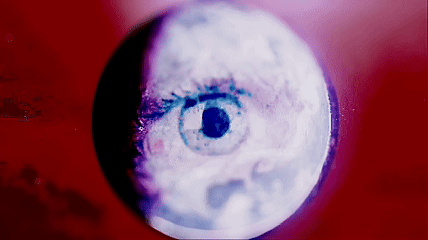
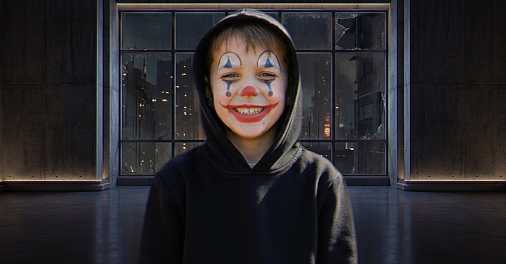
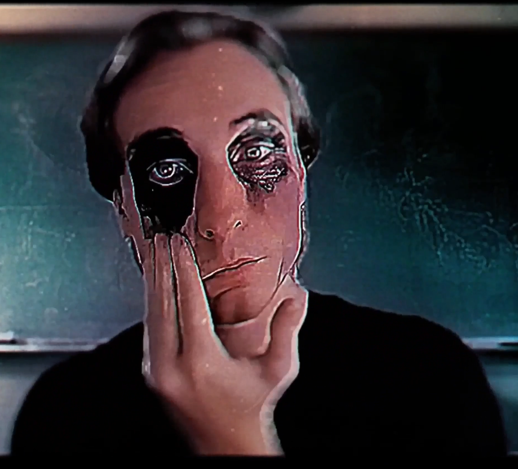

<!DOCTYPE html>
<html lang="it">

<head>
    <meta charset="UTF-8">
    <meta name="viewport" content="width=device-width, initial-scale=1.0, maximum-scale=5.0, user-scalable=yes">
    <meta name="apple-mobile-web-app-capable" content="yes">
    <meta name="mobile-web-app-capable" content="yes">
    <meta name="apple-mobile-web-app-status-bar-style" content="black-translucent">
    <script src="schermo-intero.js?v=3" data-telefono></script>
    <title>Emanuele Baccigalupi - Digital Artist, Maker & Creative Developer</title>

    <!-- Favicon & App Icons -->
    <link rel="icon" type="image/png" sizes="32x32" href="immagini/favicon.png">
    <link rel="apple-touch-icon" sizes="180x180" href="immagini/favicon.png">
    <link rel="shortcut icon" href="immagini/favicon.png" type="image/png">

    <!-- SEO Meta Tags -->
    <meta name="description"
        content="Nato a Carrara nel 2001, Baccigalupi è un artista poliedrico la cui ricerca spazia tra teatro, musica e arti visive. Dopo una formazione come attore teatrale e liricista, ha abbracciato le arti multimediali studiando presso la Scuola di Nuove Tecnologie per l'Arte dell'Accademia di Belle Arti di Carrara. La sua opera esplora la memoria, il cosmo e la percezione umana, fondendo suono e immagine in esperienze immersive che sfidano la gravità emotiva e la narrazione tradizionale.">
    <meta name="keywords"
        content="Emanuele Baccigalupi, Portfolio, Digital Artist, Creative Developer, Maker, AI Art, Sound Design, Generative Art, Videomaking, Visual Art, Web Design, Creative Coding, Interactive Installations, Artista Indipendente">
    <meta name="author" content="Emanuele Baccigalupi">
    <meta name="robots" content="index, follow">


    <!-- Open Graph / Social Media -->
    <meta property="og:type" content="website">
    <meta property="og:title" content="Emanuele Baccigalupi - Digital Artist & Creative Developer">
    <meta property="og:description"
        content="Nato a Carrara nel 2001, Baccigalupi è un artista poliedrico la cui ricerca spazia tra teatro, musica e arti visive. Dopo una formazione come attore teatrale e liricista, ha abbracciato le arti multimediali studiando presso la Scuola di Nuove Tecnologie per l'Arte dell'Accademia di Belle Arti di Carrara. La sua opera esplora la memoria, il cosmo e la percezione umana, fondendo suono e immagine in esperienze immersive che sfidano la gravità emotiva e la narrazione tradizionale.">
    <meta property="og:image" content="immagini/favicon.png">

    <!-- Structured Data (JSON-LD) for Google Search -->
    <script type="application/ld+json">
    {
      "@context": "https://schema.org",
      "@type": "Person",
      "name": "Emanuele Baccigalupi",
      "birthPlace": { "@type": "Place", "name": "Carrara, Italia" },
      "url": "https://www.ebmaker.it",
      "jobTitle": "Digital Artist & Creative Developer",
      "worksFor": {
        "@type": "Organization",
        "name": "Freelance"
      },
      "image": "immagini/favicon.png",
      "sameAs": [
        "https://www.instagram.com/emanuelebaccigalupi/"
      ]
    }
    </script>

    <!-- Resource Hints & Preconnect for Fast Google Loading -->
    <link rel="preconnect" href="https://fonts.googleapis.com">
    <link rel="preconnect" href="https://fonts.gstatic.com" crossorigin>
    <link rel="preconnect" href="https://unpkg.com" crossorigin>
    <link rel="preconnect" href="https://cdn.tailwindcss.com" crossorigin>
    <link rel="dns-prefetch" href="https://img.youtube.com">
    <link rel="dns-prefetch" href="https://www.youtube.com">

    <!-- React & ReactDOM (Production Minified for Speed) -->
    <script crossorigin src="https://unpkg.com/react@18/umd/react.production.min.js"></script>
    <script crossorigin src="https://unpkg.com/react-dom@18/umd/react-dom.production.min.js"></script>

    <!-- Babel for JSX -->
    <script src="https://unpkg.com/@babel/standalone@7/babel.min.js"></script>

    <!-- Tailwind CSS -->
    <script src="https://cdn.tailwindcss.com"></script>
    <script>
        /* i testi sono in carattere da computer (quello dei popup ERRORE), i titoli in Consolas (quello della scritta EXIT) */
        tailwind.config = { theme: { extend: { fontFamily: {
            sans: ['Consolas', '"Lucida Console"', 'Inconsolata', 'ui-monospace', 'Menlo', 'monospace'],
            serif: ['Consolas', '"Lucida Console"', 'Inconsolata', 'ui-monospace', 'Menlo', 'monospace'],
            mono: ['Consolas', '"Lucida Console"', 'Inconsolata', 'ui-monospace', 'Menlo', 'monospace'],
            display: ['Consolas', '"Lucida Console"', 'Inconsolata', 'monospace']
        } } } };
    </script>

    <!-- Lucide Icons -->
    <script src="https://unpkg.com/lucide@latest"></script>

    <!-- la pagina resta nera finché i caratteri non sono pronti (al massimo 2,5 s):
         prima si vedeva per un attimo il carattere vecchio -->
    <style>html.font-attesa body{visibility:hidden}</style>
    <script>(function(){var d=document.documentElement;d.classList.add("font-attesa");function via(){d.classList.remove("font-attesa")}setTimeout(via,2500);if(!(document.fonts&&document.fonts.load))return via();document.addEventListener("DOMContentLoaded",function(){Promise.all([document.fonts.load("1em Consolas, Inconsolata"),document.fonts.load("1em Inconsolata")]).then(via,via)})})();</script>

    <!-- Google Fonts -->
    <link rel="preload" as="style" href="https://fonts.googleapis.com/css2?family=Inconsolata:wght@400;700&display=block">
    <link href="https://fonts.googleapis.com/css2?family=Inconsolata:wght@400;700&display=block"
        rel="stylesheet">

    <!-- la radio del museo, anche qui: il ◉ in alto a destra e la sua
         schermata (la stessa scaletta, lo stesso motore) -->
    <link rel="stylesheet" href="museo/radio-schermo.css?v=1">

    <style>
        :root {
            --bg-color: #050505;
            --text-main: #ffffff;
            --text-muted: #a3a3a3;
            --accent-red: #dc2626;
            --pc: Consolas, "Lucida Console", Inconsolata, ui-monospace, Menlo, monospace;
            --titoli: Consolas, "Lucida Console", Inconsolata, ui-monospace, Menlo, monospace;
        }

        html {
            scroll-behavior: smooth;
            width: 100%;
            overflow-x: hidden;
        }

        body {
            margin: 0;
            padding: 0;
            width: 100%;
            min-height: 100vh;
            overflow-x: hidden;
            position: relative;
            font-family: var(--pc);
            background-color: var(--bg-color);
            color: var(--text-main);
            -webkit-overflow-scrolling: touch;
        }

        #root {
            width: 100%;
            overflow-x: hidden;
        }

        h1,
        h2,
        h3,
        .brand-font {
            font-family: var(--titoli); font-weight: 700;
            font-synthesis: weight;
            text-transform: uppercase;
            letter-spacing: 0.05em;
        }

        .section-title {
            font-size: clamp(2rem, 5vw, 4rem);
            font-weight: 700;
            line-height: 0.9;
            margin-bottom: 2rem;
            letter-spacing: -0.05em;
        }

        .noise-bg {
            position: fixed;
            top: 0;
            left: 0;
            width: 100vw;
            height: 100vh;
            pointer-events: none;
            z-index: 50;
            opacity: 0.04;
            background-image: url("data:image/svg+xml,%3Csvg viewBox='0 0 200 200' xmlns='http://www.w3.org/2000/svg'%3E%3Cfilter id='noiseFilter'%3E%3CfeTurbulence type='fractalNoise' baseFrequency='0.65' numOctaves='3' stitchTiles='stitch'/%3E%3C/filter%3E%3Crect width='100%25' height='100%25' filter='url(%23noiseFilter)'/%3E%3C/svg%3E");
        }

        /* Custom scrollbar */
        ::-webkit-scrollbar {
            width: 8px;
        }

        ::-webkit-scrollbar-track {
            background: #000;
        }

        ::-webkit-scrollbar-thumb {
            background: #333;
            border-radius: 4px;
        }

        ::-webkit-scrollbar-thumb:hover {
            background: #555;
        }

        .text-justify-custom {
            text-align: justify;
        }

        /* ─── CODICE: i giochi su una linea (computer) o due (tablet 4+3, telefono 2 per riga) ─── */
        .giochi-fila { display: flex; flex-wrap: wrap; justify-content: center; gap: 1rem; }
        .giochi-fila > * { width: calc(50% - 0.5rem); }
        @media (min-width: 640px) { .giochi-fila > * { width: calc(25% - 0.75rem); } }
        @media (min-width: 1024px) { .giochi-fila > * { width: calc((100% - 6rem) / 7); } }

        /* ─── MATERIALI: i 5 cortometraggi su una linea (computer); più stretti, righe centrate ─── */
        .corti-fila { display: flex; flex-wrap: wrap; justify-content: center; gap: 1.5rem; }
        .corti-fila > * { width: 100%; }
        @media (min-width: 768px) { .corti-fila > * { width: calc(50% - 0.75rem); } }
        @media (min-width: 1024px) { .corti-fila > * { width: calc((100% - 6rem) / 5); } }

        /* ─── CHARLES IN VHS (riquadro «clicca su di me») ─── */
        .vhs { animation: vhsJitter 3.2s steps(1) infinite; }
        .vhs-img { position: absolute; inset: 0; width: 100%; height: 100%; object-fit: contain; padding: 8px; filter: contrast(1.2) saturate(0.7) brightness(0.95); }
        .vhs-r { mix-blend-mode: screen; opacity: .55; filter: sepia(1) saturate(6) hue-rotate(-50deg) brightness(.8); transform: translateX(3px); animation: vhsShiftR 2.6s infinite; }
        .vhs-b { mix-blend-mode: screen; opacity: .5; filter: sepia(1) saturate(6) hue-rotate(170deg) brightness(.8); transform: translateX(-3px); animation: vhsShiftB 2.6s infinite; }
        .vhs-band { position: absolute; left: 0; right: 0; height: 18%; top: -20%; background: linear-gradient(to bottom, transparent, rgba(255,255,255,.14) 45%, rgba(255,255,255,.05) 55%, transparent); backdrop-filter: blur(1px) saturate(1.6); animation: vhsBand 4.5s linear infinite; }
        .vhs-rec { position: absolute; top: 8px; left: 10px; font-size: 10px; letter-spacing: .15em; color: rgba(255,255,255,.8); text-shadow: 1px 0 rgba(255,0,0,.7), -1px 0 rgba(0,120,255,.7); }
        @keyframes vhsBand { from { top: -20%; } to { top: 110%; } }
        @keyframes vhsShiftR { 0%, 88%, 100% { transform: translateX(3px); } 90% { transform: translateX(9px); } 94% { transform: translateX(-2px); } }
        @keyframes vhsShiftB { 0%, 88%, 100% { transform: translateX(-3px); } 91% { transform: translateX(-8px); } 95% { transform: translateX(2px); } }
        @keyframes vhsJitter { 0%, 100% { transform: none; } 47% { transform: translate(1px, -1px) skewX(-1.5deg); } 48% { transform: translate(-2px, 0) skewX(2deg); } 49% { transform: none; } 81% { transform: translateY(2px); } 82% { transform: none; } }
        @media (prefers-reduced-motion: reduce) { .vhs, .vhs-r, .vhs-b, .vhs-band { animation: none; } }

        /* ─── SUBCONSCIO disintegration ─── */
        @keyframes subcParticleFloat {
            0% {
                transform: translate(0, 0) rotate(0deg) scale(1);
                opacity: 1;
            }

            30% {
                opacity: 0.9;
            }

            100% {
                transform: translate(var(--tx), var(--ty)) rotate(var(--tr)) scale(var(--ts));
                opacity: 0;
            }
        }

        @keyframes subcBgPulse {
            0% {
                background-color: #050505;
            }

            40% {
                background-color: #0a0005;
            }

            80% {
                background-color: #000000;
            }

            100% {
                background-color: #000000;
            }
        }

        .subc-fragment {
            position: fixed;
            background: #fff;
            z-index: 9998;
            pointer-events: none;
            border-radius: 1px;
            animation: subcParticleFloat var(--dur) ease-in-out forwards;
        }

        /* ---- IL SEGNO DEL SUBCONSCIO -------------------------------
           Un punto interrogativo rosso, grande quanto lo schermo.
           Prima qui c'era un coniglio bianco: il gioco è lo stesso,
           il segno no. */
        .subc-punto-overlay {
            position: fixed;
            inset: 0;
            display: flex;
            align-items: center;
            justify-content: center;
            z-index: 9997;
            pointer-events: none;
            opacity: 0;
            transition: opacity 0.6s ease;
        }

        .subc-punto-overlay.visible {
            opacity: 1;
        }

        .subc-punto-overlay span {
            font-size: 35vmin;
            font-weight: 700;
            line-height: 1;
            color: #dc2626;
            font-family: Consolas, Inconsolata, cursive;
            text-shadow: 0 0 40px rgba(220, 38, 38, 0.55);
            animation: puntoSpin 1.2s ease-in-out;
            display: inline-block;
        }

        @keyframes puntoSpin {
            0% {
                transform: scale(0.1) rotate(-20deg);
                opacity: 0;
            }

            60% {
                transform: scale(1.08) rotate(5deg);
                opacity: 1;
            }

            100% {
                transform: scale(1) rotate(0deg);
                opacity: 1;
            }
        }

        /* ─── LA LUMACA CHE PASSA NELL'HOME ─────────────────────
           Il disegno viene da `lumaca/lumaca.gif`, il file così com'è:
           un GIF animato di 1138×640, 80 fotogrammi da 100 ms, cioè otto
           secondi esatti per un giro, disegno chiaro su fondo nero.
           La lumaca non sta in scena: si aspetta, e ogni quaranta secondi
           fa una passata — compare in fondo alla sezione, il GIF parte
           dal primo fotogramma e arriva in fondo al giro, poi sparisce e
           si torna ad aspettare. I due tempi stanno nello script, dentro
           `HeroLumaca`: `LUMACA_ATTESA` e `LUMACA_GIRO`.
           Trasparenza dentro il GIF non ce n'è — il nero è vernice — e
           non serve fabbricarla in un altro file: si toglie dal CSS.
           `screen` è una fusione che ha il nero come elemento neutro,
           quindi il riquadro sparisce nel fondo e resta solo il segno
           chiaro; l'opacità abbassa quel segno e lo fa stare indietro,
           che è quello che si chiede a una figura di sfondo.
           Il disegno non occupa tutta la tela: sta nella fascia che va
           da (13,264) a (1137,448), cioè 1125×185, con il nero attorno.
           Il riquadro qui sotto è alto quanto la fascia, e l'immagine è
           scalata e spostata in negativo di quei pixel: nei bordi del
           riquadro cade esattamente il disegno. Le misure sono quelle
           vere, misurate sul file: se un giorno cambia il GIF, vanno
           rimisurate. `--passo` è la larghezza su cui si scala il
           disegno, più di uno schermo: se ne vede la parte sinistra, che
           è dove sta la lumaca.
           La figura poggia sul bordo basso della sezione. */
        .hero-lumaca-via {
            position: absolute;
            left: 0;
            right: 0;
            bottom: 0;
            z-index: 5;
            pointer-events: none;
            --passo: 160vw;
            /* Il nero del GIF non è trasparenza, è vernice: da solo
               farebbe il riquadro. Con `screen` il nero è l'elemento
               neutro della fusione — sparisce nel fondo e resta solo il
               disegno chiaro. Fuori dalla passata qui dentro non c'è
               niente da fondere: il contenitore resta, il disegno lo
               mette e lo toglie React. */
            mix-blend-mode: screen;
        }

        /* la finestra sul GIF: alta quanto la fascia del disegno, larga il
           passo, e ritagliata — dentro ci sta l'immagine intera, spostata
           in negativo di quei tredici e di quei duecentossessantaquattro
           pixel, così nei bordi cade il disegno e non il nero che avanza.
           Dentro ci va uno `` vero e non uno sfondo CSS: un GIF,
           per ripartire dal primo fotogramma, ha bisogno di un nodo
           nuovo, e la `background-image` la tiene il browser.
           `lumacaPassa` è la passata: entra in mezzo secondo, sta lì per
           tutto il giro, esce negli ultimi mezzo secondo. Così non si
           vede mai il fotogramma zero ripresentarsi dopo il
           ricominciamento del loop. La durata arriva dallo script in
           `--giro`: è la stessa che il timer usa per togliere la scena,
           così CSS e JavaScript non possono andare d'accordo male. */
        .hero-lumaca {
            width: var(--passo);
            height: calc(var(--passo) * 185 / 1125);
            overflow: hidden;
            opacity: 0;
            pointer-events: none;
            user-select: none;
        }

        .hero-lumaca.in-scena {
            animation: lumacaPassa var(--giro, 8s) linear forwards;
        }

        .hero-lumaca img {
            display: block;
            width: calc(var(--passo) * 1138 / 1125);
            height: auto;
            margin-left: calc(var(--passo) * -13 / 1125);
            margin-top: calc(var(--passo) * -264 / 1125);
            pointer-events: none;
            user-select: none;
        }

        @keyframes lumacaPassa {
            0% {
                opacity: 0;
            }

            6% {
                opacity: 0.5;
            }

            94% {
                opacity: 0.5;
            }

            100% {
                opacity: 0;
            }
        }

        /* IL NOME, PICCOLO E ROSSO, AL CENTRO DELL'HOME ─────────────
           Come era prima che in mezzo restasse solo la lumaca: una riga
           sola in carattere a macchina, minuscola, rossa, in maiuscoletto
           spaziato, nel mezzo della sezione e sopra lo slideshow. Prende
           le stesse misure della riga che c'era prima (`font-mono
           text-xs md:text-sm`, uppercase, tracking 0.3em). Non prende i
           clic: ci passa attraverso, e il clic va alla sezione che
           scorre giù. L'ombra sotto al testo serve solo a staccarlo dal
           video. */
        .hero-nome {
            position: absolute;
            left: 50%;
            top: 50%;
            transform: translate(-50%, -50%);
            z-index: 6;
            margin: 0;
            padding: 0;
            font-family: Consolas, Inconsolata, cursive;
            font-size: clamp(0.75rem, 1.6vw, 0.875rem);
            font-weight: 700;
            line-height: 1;
            letter-spacing: 0.3em;
            text-transform: uppercase;
            text-align: center;
            white-space: nowrap;
            color: #dc2626;
            text-shadow: 0 0 18px rgba(0, 0, 0, 0.9);
            pointer-events: none;
            user-select: none;
        }

        /* il ◉ della radio resta, ma senza la riga col nome del pezzo
           che gli sta sotto: nell'home non serve a nessuno, e faceva
           solo rumore sopra il disegno. Il nome ce l'ha il fumetto del
           bottone (`title`), e la schermata della stazione lo scrive
           grande accanto ai tasti. Il DIV resta nel DOM perché
           `museo/radio.js` lo cerca e ci scrive dentro: si nasconde
           solo alla vista. */
        #radioHud #radioName {
            display: none;
        }
    </style>
</head>

<body>
    <div class="noise-bg"></div>
    <div id="root"></div>

    <!-- la radio del sito: la fila delle canzoni e lo stato che il museo
         tiene in `museo.radio`. Vanno prima del codice React: la fila
         serve anche alla sezione «Canzoni & Audio», che così ha una lista
         sola — e la stessa che suona nel museo. La radio si accende e si
         comanda là (il ◉ dell'HUD, il tasto R, il pinguino del bar); qui
         si ritrova accesa, allo stesso secondo, senza un secondo lettore -->
    <script src="museo/radio-fila.js?v=1"></script>
    <script src="museo/radio.js?v=5"></script>
    <!-- il ◉ della radio accanto al titolo delle canzoni, non più in
         alto a destra: `data-ancora` dice allo script dove montarlo
         (il segnaposto `#radioPosto` nella riga di «Canzoni & Audio»).
         Se il segnaposto non c'è, torna nell'angolo come prima. Il
         tasto R fa lo stesso, tranne quando si sta scrivendo in un
         campo -->
    <script src="museo/radio-schermo.js?v=4" data-tasto="r" data-ancora="#radioPosto"></script>

    <script type="text/babel">
        const { useState, useEffect, useRef } = React;

        // ── Subconscio disintegration ──────────────────────────────
        // Se si torna indietro dal Subconscio (cache del browser), la pagina
        // ricompare com'era a metà effetto: invisibile e con il segno sopra.
        // Qui la si rimette a posto.
        function restoreFromSubconscious() {
            document.querySelectorAll('.subc-punto-overlay, .subc-fragment').forEach(el => el.remove());
            const root = document.getElementById('root');
            if (root) { root.style.filter = ''; root.style.opacity = '1'; }
        }
        window.addEventListener('pageshow', restoreFromSubconscious);

        function triggerSubconsciousEffect(callback) {
            // Phase 1: fragment the page
            const body = document.body;
            const W = window.innerWidth, H = window.innerHeight;
            const FRAGS = 180;

            // Create white pixel fragments
            for (let i = 0; i < FRAGS; i++) {
                const el = document.createElement('div');
                el.className = 'subc-fragment';
                const x0 = Math.random() * W;
                const y0 = Math.random() * H;
                const size = 2 + Math.random() * 6;
                el.style.cssText = `
                    left: ${x0}px; top: ${y0}px;
                    width: ${size}px; height: ${size}px;
                    --tx: ${(Math.random() - 0.5) * W * 0.8}px;
                    --ty: ${(Math.random() - 0.5) * H * 0.8}px;
                    --tr: ${(Math.random() - 0.5) * 720}deg;
                    --ts: ${0.1 + Math.random() * 0.5};
                    --dur: ${0.6 + Math.random() * 1.0}s;
                    animation-delay: ${Math.random() * 0.3}s;
                `;
                body.appendChild(el);
                setTimeout(() => { if (el.parentNode) el.parentNode.removeChild(el); }, 1500);
            }

            // Glitch the root element
            const root = document.getElementById('root');
            if (root) {
                root.style.transition = 'filter 0.3s, opacity 0.5s';
                root.style.filter = 'invert(1) hue-rotate(180deg) blur(2px)';
                root.style.opacity = '0';
            }

            // After animation → navigate
            setTimeout(() => {
                if (callback) callback();
                setTimeout(() => {
                    if (root) { root.style.filter = ''; root.style.opacity = '1'; }
                }, 400);
            }, 900);
        }

        // Icons components
        const Icons = {
            Home: (props) => <svg xmlns="http://www.w3.org/2000/svg" width="24" height="24" viewBox="0 0 24 24" fill="none" stroke="currentColor" strokeWidth="2" strokeLinecap="round" strokeLinejoin="round" {...props}><path d="m3 9 9-7 9 7v11a2 2 0 0 1-2 2H5a2 2 0 0 1-2-2z" /><polyline points="9 22 9 12 15 12 15 22" /></svg>,
            Youtube: () => <svg xmlns="http://www.w3.org/2000/svg" width="24" height="24" viewBox="0 0 24 24" fill="none" stroke="currentColor" strokeWidth="2" strokeLinecap="round" strokeLinejoin="round"><path d="M2.5 17a24.12 24.12 0 0 1 0-10 2 2 0 0 1 1.4-1.4 49.56 49.56 0 0 1 16.2 0A2 2 0 0 1 21.5 7a24.12 24.12 0 0 1 0 10 2 2 0 0 1-1.4 1.4 49.55 49.55 0 0 1-16.2 0A2 2 0 0 1 2.5 17" /><path d="m10 15 5-3-5-3z" /></svg>,
            Mail: () => <svg xmlns="http://www.w3.org/2000/svg" width="24" height="24" viewBox="0 0 24 24" fill="none" stroke="currentColor" strokeWidth="2" strokeLinecap="round" strokeLinejoin="round"><rect width="20" height="16" x="2" y="4" rx="2" /><path d="m22 7-8.97 5.7a1.94 1.94 0 0 1-2.06 0L2 7" /></svg>,
            Instagram: () => <svg xmlns="http://www.w3.org/2000/svg" width="24" height="24" viewBox="0 0 24 24" fill="none" stroke="currentColor" strokeWidth="2" strokeLinecap="round" strokeLinejoin="round"><rect width="20" height="20" x="2" y="2" rx="5" ry="5" /><path d="M16 11.37A4 4 0 1 1 12.63 8 4 4 0 0 1 16 11.37z" /><line x1="17.5" x2="17.51" y1="6.5" y2="6.5" /></svg>,
            Gamepad: () => <svg xmlns="http://www.w3.org/2000/svg" width="24" height="24" viewBox="0 0 24 24" fill="none" stroke="currentColor" strokeWidth="2" strokeLinecap="round" strokeLinejoin="round"><line x1="6" x2="10" y1="12" y2="12" /><line x1="8" x2="8" y1="10" y2="14" /><line x1="15" x2="15.01" y1="13" y2="13" /><line x1="18" x2="18.01" y1="11" y2="11" /><rect width="20" height="12" x="2" y="6" rx="2" /></svg>,
            Play: () => <svg xmlns="http://www.w3.org/2000/svg" width="24" height="24" viewBox="0 0 24 24" fill="none" stroke="currentColor" strokeWidth="2" strokeLinecap="round" strokeLinejoin="round"><polygon points="5 3 19 12 5 21 5 3" /></svg>,
            Menu: () => <svg xmlns="http://www.w3.org/2000/svg" width="24" height="24" viewBox="0 0 24 24" fill="none" stroke="currentColor" strokeWidth="2" strokeLinecap="round" strokeLinejoin="round"><line x1="4" x2="20" y1="12" y2="12" /><line x1="4" x2="20" y1="6" y2="6" /><line x1="4" x2="20" y1="18" y2="18" /></svg>,
            X: () => <svg xmlns="http://www.w3.org/2000/svg" width="24" height="24" viewBox="0 0 24 24" fill="none" stroke="currentColor" strokeWidth="2" strokeLinecap="round" strokeLinejoin="round"><path d="M18 6 6 18" /><path d="m6 6 12 12" /></svg>,
            Radio: () => <svg xmlns="http://www.w3.org/2000/svg" width="24" height="24" viewBox="0 0 24 24" fill="none" stroke="currentColor" strokeWidth="2" strokeLinecap="round" strokeLinejoin="round"><circle cx="12" cy="12" r="2" /><path d="M16.24 7.76a6 6 0 0 1 0 8.49m-8.48-.01a6 6 0 0 1 0-8.49m11.31-2.82a10 10 0 0 1 0 14.14m-14.14 0a10 10 0 0 1 0-14.14" /></svg>,
            ArrowRight: () => <svg xmlns="http://www.w3.org/2000/svg" width="24" height="24" viewBox="0 0 24 24" fill="none" stroke="currentColor" strokeWidth="2" strokeLinecap="round" strokeLinejoin="round"><path d="M5 12h14" /><path d="m12 5 7 7-7 7" /></svg>,
            BookOpen: () => <svg xmlns="http://www.w3.org/2000/svg" width="24" height="24" viewBox="0 0 24 24" fill="none" stroke="currentColor" strokeWidth="2" strokeLinecap="round" strokeLinejoin="round"><path d="M2 3h6a4 4 0 0 1 4 4v14a3 3 0 0 0-3-3H2z" /><path d="M22 3h-6a4 4 0 0 0-4 4v14a3 3 0 0 1 3-3h7z" /></svg>,
            Feather: () => <svg xmlns="http://www.w3.org/2000/svg" width="24" height="24" viewBox="0 0 24 24" fill="none" stroke="currentColor" strokeWidth="2" strokeLinecap="round" strokeLinejoin="round"><path d="M20.24 12.24a6 6 0 0 0-8.49-8.49L5 10.5V19h8.5z" /><line x1="16" x2="2" y1="8" y2="22" /><line x1="17.5" x2="9" y1="15" y2="15" /></svg>,
            Music: () => <svg xmlns="http://www.w3.org/2000/svg" width="24" height="24" viewBox="0 0 24 24" fill="none" stroke="currentColor" strokeWidth="2" strokeLinecap="round" strokeLinejoin="round"><path d="M9 18V5l12-2v13" /><circle cx="6" cy="18" r="3" /><circle cx="18" cy="16" r="3" /></svg>,
            Film: () => <svg xmlns="http://www.w3.org/2000/svg" width="24" height="24" viewBox="0 0 24 24" fill="none" stroke="currentColor" strokeWidth="2" strokeLinecap="round" strokeLinejoin="round"><rect width="20" height="20" x="2" y="2" rx="2.18" ry="2.18" /><line x1="7" x2="7" y1="2" y2="22" /><line x1="17" x2="17" y1="2" y2="22" /><line x1="2" x2="22" y1="12" y2="12" /><line x1="2" x2="7" y1="7" y2="7" /><line x1="2" x2="7" y1="17" y2="17" /><line x1="17" x2="22" y1="17" y2="17" /><line x1="17" x2="22" y1="7" y2="7" /></svg>,
            Users: () => <svg xmlns="http://www.w3.org/2000/svg" width="24" height="24" viewBox="0 0 24 24" fill="none" stroke="currentColor" strokeWidth="2" strokeLinecap="round" strokeLinejoin="round"><path d="M16 21v-2a4 4 0 0 0-4-4H6a4 4 0 0 0-4 4v2" /><circle cx="9" cy="7" r="4" /><path d="M22 21v-2a4 4 0 0 0-3-3.87" /><path d="M16 3.13a4 4 0 0 1 0 7.75" /></svg>,
            Monitor: () => <svg xmlns="http://www.w3.org/2000/svg" width="24" height="24" viewBox="0 0 24 24" fill="none" stroke="currentColor" strokeWidth="2" strokeLinecap="round" strokeLinejoin="round"><rect x="2" y="3" width="20" height="14" rx="2" ry="2"></rect><line x1="8" y1="21" x2="16" y2="21"></line><line x1="12" y1="17" x2="12" y2="21"></line></svg>,
            Camera: () => <svg xmlns="http://www.w3.org/2000/svg" width="24" height="24" viewBox="0 0 24 24" fill="none" stroke="currentColor" strokeWidth="2" strokeLinecap="round" strokeLinejoin="round"><path d="M23 19a2 2 0 0 1-2 2H3a2 2 0 0 1-2-2V8a2 2 0 0 1 2-2h4l2-3h6l2 3h4a2 2 0 0 1 2 2z"></path><circle cx="12" cy="13" r="4"></circle></svg>,
            Code: () => <svg xmlns="http://www.w3.org/2000/svg" width="24" height="24" viewBox="0 0 24 24" fill="none" stroke="currentColor" strokeWidth="2" strokeLinecap="round" strokeLinejoin="round"><polyline points="16 18 22 12 16 6" /><polyline points="8 6 2 12 8 18" /></svg>,
            Eye: () => <svg xmlns="http://www.w3.org/2000/svg" width="24" height="24" viewBox="0 0 24 24" fill="none" stroke="currentColor" strokeWidth="2" strokeLinecap="round" strokeLinejoin="round"><path d="M2 12s3-7 10-7 10 7 10 7-3 7-10 7-10-7-10-7Z" /><circle cx="12" cy="12" r="3" /></svg>,
            Mic2: () => <svg xmlns="http://www.w3.org/2000/svg" width="24" height="24" viewBox="0 0 24 24" fill="none" stroke="currentColor" strokeWidth="2" strokeLinecap="round" strokeLinejoin="round"><path d="m12 8-9.04 9.06a2.82 2.82 0 1 0 3.98 3.98l9.06-9.06" /><path d="m12 8 9.04 9.06a2.82 2.82 0 1 1-3.98 3.98l-9.06-9.06" /><line x1="12" x2="12" y1="8" y2="3" /><line x1="8" x2="8" y1="21" y2="17" /><line x1="16" x2="16" y1="21" y2="17" /><line x1="15" x2="15" y1="13" y2="13" /><line x1="9" x2="9" y1="13" y2="13" /></svg>,
            PenTool: () => <svg xmlns="http://www.w3.org/2000/svg" width="24" height="24" viewBox="0 0 24 24" fill="none" stroke="currentColor" strokeWidth="2" strokeLinecap="round" strokeLinejoin="round"><path d="m12 19 7-7 3 3-7 7-3-3z" /><path d="m18 13-1.5-7.5L2 2l3.5 14.5L13 18l5-5z" /><path d="m2 2 7.586 7.586" /><circle cx="11" cy="11" r="2" /></svg>,
            User: () => <svg xmlns="http://www.w3.org/2000/svg" width="24" height="24" viewBox="0 0 24 24" fill="none" stroke="currentColor" strokeWidth="2" strokeLinecap="round" strokeLinejoin="round"><path d="M19 21v-2a4 4 0 0 0-4-4H9a4 4 0 0 0-4 4v2" /><circle cx="12" cy="7" r="4" /></svg>,
            Pause: (props) => <svg xmlns="http://www.w3.org/2000/svg" width="24" height="24" viewBox="0 0 24 24" fill="none" stroke="currentColor" strokeWidth="2" strokeLinecap="round" strokeLinejoin="round" {...props}><rect x="6" y="4" width="4" height="16" /><rect x="14" y="4" width="4" height="16" /></svg>,
            Square: (props) => <svg xmlns="http://www.w3.org/2000/svg" width="24" height="24" viewBox="0 0 24 24" fill="none" stroke="currentColor" strokeWidth="2" strokeLinecap="round" strokeLinejoin="round" {...props}><rect x="3" y="3" width="18" height="18" rx="2" ry="2" /></svg>
        };

        const VideoPlaceholder = ({ label, extraClass = "", url, videoId, inLavorazione = false }) => {
            const [isPlaying, setIsPlaying] = useState(false);
            const [isVisible, setIsVisible] = useState(false);
            const containerRef = React.useRef(null);

            useEffect(() => {
                const observer = new IntersectionObserver(([entry]) => {
                    if (entry.isIntersecting) {
                        setIsVisible(true);
                        observer.disconnect();
                    }
                }, { rootMargin: '200px' });

                if (containerRef.current) observer.observe(containerRef.current);
                return () => observer.disconnect();
            }, []);

            // Construct YouTube thumbnail URL if videoId is present
            const thumbnailUrl = videoId
                ? `https://img.youtube.com/vi/${videoId}/maxresdefault.jpg`
                : null;

            if (videoId && isPlaying) {
                return (
                    <div ref={containerRef} className={`relative bg-neutral-900 border border-neutral-800 w-full h-full ${extraClass}`}>
                        <iframe
                            width="100%"
                            height="100%"
                            src={`https://www.youtube.com/embed/${videoId}?autoplay=1`}
                            title="YouTube video player"
                            frameBorder="0"
                            allow="accelerometer; autoplay; clipboard-write; encrypted-media; gyroscope; picture-in-picture"
                            allowFullScreen
                            loading="lazy"
                            className="absolute inset-0"
                        ></iframe>
                    </div>
                );
            }

            const Tag = url && !videoId ? 'a' : 'div';
            const props = url && !videoId ? { href: url, target: "_blank", rel: "noopener noreferrer" } : {};
            const handleClick = () => {
                if (videoId) setIsPlaying(true);
            };

            return (
                <Tag
                    {...props}
                    ref={containerRef}
                    onClick={handleClick}
                    className={`relative bg-neutral-900 border border-neutral-800 flex items-center justify-center group ${videoId ? 'cursor-pointer hover:border-red-600/50' : 'cursor-default'} overflow-hidden ${extraClass}`}
                >
                    <div className="absolute inset-0 bg-black/40 group-hover:bg-black/20 transition-all z-10"></div>
                    {/* Dark atmospheric textured background */}
                    <div className="absolute inset-0 bg-gradient-to-br from-neutral-950 via-neutral-900 to-red-950/30 opacity-90 flex items-center justify-center">
                        <div className="w-full h-full opacity-15 bg-[radial-gradient(#ef4444_1px,transparent_1px)] [background-size:16px_16px]"></div>
                    </div>
                    {/* Dynamic Thumbnail */}
                    {thumbnailUrl && (
                        <div
                            className="absolute inset-0 bg-cover bg-center opacity-70 group-hover:scale-[1.02] transition-transform duration-700"
                            style={isVisible ? { backgroundImage: `url('${thumbnailUrl}')` } : {}}
                        ></div>
                    )}

                    <div className="z-20 text-center px-4">
                        <div className={`w-14 h-14 md:w-16 md:h-16 rounded-full border-2 ${videoId ? 'border-white group-hover:bg-white group-hover:text-black shadow-[0_0_15px_rgba(255,255,255,0.2)]' : 'border-neutral-700 text-neutral-500'} flex items-center justify-center mx-auto mb-3 transition-all backdrop-blur-sm bg-black/40`}>
                            {videoId ? <Icons.Play /> : <Icons.Film className="w-6 h-6 text-red-500/80 animate-pulse" />}
                        </div>
                        <div className="flex flex-col items-center gap-1.5">
                            <span className="text-xs font-bold uppercase tracking-widest text-white border border-white/20 px-2.5 py-1 bg-black/60 backdrop-blur-md">
                                {label}
                            </span>
                            {(inLavorazione && !videoId) && (
                                <span className="text-[10px] font-mono uppercase tracking-widest text-red-400 bg-red-950/70 border border-red-900/50 px-2 py-0.5 rounded">
                                    In lavorazione
                                </span>
                            )}
                        </div>
                    </div>
                </Tag>
            );
        };

        const MobileBottomNav = ({ scrollToSection, activeSection }) => {
            const [isMenuOpen, setIsMenuOpen] = useState(false);

            useEffect(() => {
                if (isMenuOpen) {
                    document.body.style.overflow = 'hidden';
                } else {
                    document.body.style.overflow = '';
                }
            }, [isMenuOpen]);

            const links = [
                { id: 'home', label: 'Home' },
                { id: 'kaoss', label: 'Radio Kaoss' },
                { id: 'cosmo', label: 'Memorie del Cosmo' },
                { id: 'visual-ai', label: 'Visual & AI' },
                { id: 'interattivo', label: 'Codice' },
                { id: 'illustrations', label: 'Illustrazioni' },
                { id: 'materials', label: 'Materiali' },
                { id: 'portfolio', label: 'Zona Larga' },
                { id: 'bio', label: 'Bio' },
                { id: 'contact', label: 'Contatti' },
            ];

            const handleNav = (id) => {
                scrollToSection(id);
                setIsMenuOpen(false);
            };

            const navTabs = [
                { id: 'home', label: 'Home', icon: Icons.Home, action: () => scrollToSection('home') },
                { id: 'cosmo', label: 'Opere', icon: Icons.Film, action: () => scrollToSection('cosmo') },
                { id: 'interattivo', label: 'Codice', icon: Icons.Gamepad, action: () => scrollToSection('interattivo') },
                { id: 'kaoss', label: 'Radio', icon: Icons.Music, action: () => scrollToSection('kaoss') },
                { id: 'menu', label: 'Menu', icon: Icons.Menu, action: () => setIsMenuOpen(true) },
            ];

            return (
                <>
                    {/* Menu Overlay */}
                    <div className={`fixed inset-0 z-[100] bg-black/98 backdrop-blur-2xl transition-all duration-300 ease-out flex flex-col justify-between lg:hidden ${isMenuOpen ? 'opacity-100 pointer-events-auto translate-y-0' : 'opacity-0 pointer-events-none translate-y-8'}`}>
                        {/* Header */}
                        <div className="flex items-center justify-between px-6 pt-6 pb-4 border-b border-neutral-900">
                            <span className="font-bold text-xs uppercase tracking-[0.25em] text-red-600">Navigazione</span>
                            <button
                                onClick={() => setIsMenuOpen(false)}
                                aria-label="Chiudi menu"
                                className="w-11 h-11 flex items-center justify-center text-neutral-400 hover:text-white active:scale-90 transition-transform bg-neutral-900/80 border border-neutral-800 rounded-full"
                            >
                                <Icons.X className="w-5 h-5" />
                            </button>
                        </div>

                        {/* Links list */}
                        <div className="flex flex-col gap-1.5 w-full max-h-[70vh] overflow-y-auto px-6 py-4">
                            {links.map((link) => {
                                const isActive = activeSection === link.id;
                                return (
                                    <button
                                        key={link.id}
                                        onClick={() => handleNav(link.id)}
                                        className={`w-full py-3 px-4 text-left font-bold text-lg uppercase tracking-wider rounded-md transition-all flex items-center justify-between ${isActive
                                                ? 'text-white bg-red-950/40 border border-red-800/60 shadow-[0_0_15px_rgba(220,38,38,0.2)]'
                                                : 'text-neutral-400 hover:text-white hover:bg-neutral-900/60'
                                            } active:scale-[0.98]`}
                                    >
                                        <span>{link.label}</span>
                                        {isActive && <span className="w-2 h-2 rounded-full bg-red-600"></span>}
                                    </button>
                                );
                            })}
                            {/* LIVE - sempre in fondo */}
                            <a
                                href="RadioKaoSs/index.html"
                                target="_blank"
                                className="flex items-center justify-between w-full py-3 px-4 mt-2 font-bold text-lg uppercase tracking-wider rounded-md bg-red-950/30 border border-red-900/50 text-red-400 active:scale-[0.98] transition-transform"
                            >
                                <span className="flex items-center gap-2">
                                    <Icons.Radio className="w-5 h-5 text-red-500 animate-pulse" />
                                    Radio KaOsS Live
                                </span>
                                <span className="text-[10px] font-mono uppercase bg-red-600 text-white px-2 py-0.5 rounded">Live</span>
                            </a>
                        </div>

                        <div className="p-6 text-center border-t border-neutral-900 text-neutral-600 text-[11px] font-mono uppercase tracking-widest">
                            Emanuele Baccigalupi
                        </div>
                    </div>

                    {/* Bottom App-Style Nav Bar */}
                    <div className="lg:hidden fixed bottom-0 left-0 right-0 z-[90] bg-black/95 backdrop-blur-lg border-t border-neutral-800/80 px-2 pt-1.5 pb-[max(6px,env(safe-area-inset-bottom))] shadow-[0_-8px_24px_rgba(0,0,0,0.8)]">
                        <div className="grid grid-cols-5 items-center max-w-md mx-auto">
                            {navTabs.map((tab) => {
                                const Icon = tab.icon;
                                const isCurrent = tab.id !== 'menu' && (
                                    activeSection === tab.id ||
                                    (tab.id === 'cosmo' && (activeSection === 'cosmo' || activeSection === 'visual-ai')) ||
                                    (tab.id === 'kaoss' && (activeSection === 'kaoss' || activeSection === 'materials'))
                                );
                                return (
                                    <button
                                        key={tab.id}
                                        onClick={tab.action}
                                        className={`flex flex-col items-center justify-center min-h-[48px] py-1 px-1 rounded-lg transition-all active:scale-90 ${isCurrent ? 'text-white' : 'text-neutral-500 hover:text-neutral-300'
                                            }`}
                                    >
                                        <div className="relative">
                                            <Icon className={`w-5 h-5 transition-transform ${isCurrent ? 'text-red-500 scale-110' : ''}`} />
                                            {isCurrent && (
                                                <span className="absolute -bottom-1 left-1/2 -translate-x-1/2 w-1 h-1 rounded-full bg-red-500 shadow-[0_0_6px_#ef4444]"></span>
                                            )}
                                        </div>
                                        <span className={`text-[10px] font-bold uppercase tracking-wider mt-1 transition-colors ${isCurrent ? 'text-white' : 'text-neutral-500'
                                            }`}>
                                            {tab.label}
                                        </span>
                                    </button>
                                );
                            })}
                        </div>
                    </div>
                </>
            );
        };

        const Nav = ({ activeSection, scrollToSection }) => {
            const links = [
                { id: 'home', label: 'Home' },
                { id: 'kaoss', label: 'Radio Kaoss' },
                { id: 'cosmo', label: 'Memorie del Cosmo' },
                { id: 'visual-ai', label: 'Visual & AI' },
                { id: 'interattivo', label: 'Codice' },
                { id: 'illustrations', label: 'Illustrazioni' },
                { id: 'materials', label: 'Materiali' },
                { id: 'portfolio', label: 'Zona Larga' },
                { id: 'bio', label: 'Bio' },
                { id: 'contact', label: 'Contatti' },
            ];

            return (
                <nav className="hidden lg:block fixed w-full z-50 bg-black/90 backdrop-blur-sm border-b border-white/10">
                    <div className="max-w-7xl mx-auto px-4 sm:px-6 lg:px-8">
                        <div className="flex items-center justify-center h-20">
                            <div>
                                <div className="flex items-baseline space-x-6">
                                    {links.map((link) => (
                                        <button
                                            key={link.id}
                                            onClick={() => scrollToSection(link.id)}
                                            className={`text-xs font-bold tracking-widest uppercase transition-all duration-300 inline-flex items-center gap-1.5 ${activeSection === link.id
                                                ? 'text-white border-b-2 border-red-600'
                                                : 'text-neutral-500 hover:text-white'
                                                }`}
                                        >
                                            {link.label}
                                        </button>
                                    ))}
                                </div>
                            </div>
                        </div>
                    </div>
                </nav>
            );
        };

        const HERO_VIDEOS = [
            "DSSlnXeicsQ", "TzRSjsjwbbY", "aSD5oB4C2k0", "7Nyp5zsjTrs",
            "yHmR2vto5jY", "IA8NHwhZ0mE", "3wkQ1VnV9MQ", "2Jwhzy_S8os",
            "J3xjF9M7McU", "kdEGkCbDpNo", "ljEb-Hk1RXM", "ewnP55nij-w",
            "ydTiEnOoZOw", "d15N1SJYna8", "JVGrP0rJb6I", "OLdtHKF-bF0",
            "mBuTbn52NwU", "pSX-55V5WDs", "gooO59AD_rs", "JssRfsHdp7E",
            "sTxUuiy72gg", "idShNGihgTo", "HazCE6VEUZg", "Jr15_es8qso",
            "1UVq6lwP8RY", "d4vJcflAObA"
        ];

        const HeroSlideshow = () => {
            const [fading, setFading] = useState(false);
            const [slotA, setSlotA] = useState(0);
            const [slotB, setSlotB] = useState(1);
            const [activeSlot, setActiveSlot] = useState('A');
            const [readyA, setReadyA] = useState(false);
            const [readyB, setReadyB] = useState(false);
            const [isOffline, setIsOffline] = useState(!navigator.onLine);
            const [started, setStarted] = useState(false);
            const readyTimers = useRef({});

            useEffect(() => {
                const goOffline = () => setIsOffline(true);
                const goOnline = () => setIsOffline(false);
                window.addEventListener('offline', goOffline);
                window.addEventListener('online', goOnline);
                return () => {
                    window.removeEventListener('offline', goOffline);
                    window.removeEventListener('online', goOnline);
                };
            }, []);

            /* INTERNET BUONO → VIDEO, INTERNET SCARSO → RESTA LA GIF
               Prima si chiede al browser com'è la connessione (Chrome e
               Android lo sanno dire); se non lo sa, si misura quanto ci ha
               messo la GIF di sfondo a scaricarsi: nessun download in più.
               Finché non si sa, i video aspettano. */
            const [netOk, setNetOk] = useState(() => {
                const c = navigator.connection || navigator.mozConnection || navigator.webkitConnection;
                if (!c) return null;
                if (c.saveData) return false;
                if (c.effectiveType && /(^|-)(2g|3g)$/.test(c.effectiveType)) return false;
                if (typeof c.downlink === 'number' && c.downlink > 0 && c.downlink < 2) return false;
                return c.effectiveType ? true : null;
            });
            const misuraDallaGif = (e) => {
                if (netOk !== null) return;
                const url = e && e.currentTarget && e.currentTarget.currentSrc;
                const entry = performance.getEntriesByType('resource').reverse().find(r => url && r.name === url);
                if (!entry || !entry.duration) { setNetOk(true); return; }
                if (entry.transferSize > 0) {
                    const mbps = entry.transferSize * 8 / entry.duration / 1000;   // megabit al secondo
                    setNetOk(mbps >= 2.5);
                } else {
                    setNetOk(entry.duration < 2500);   // dalla cache o senza misura: basta il tempo
                }
            };
            useEffect(() => {
                const c = navigator.connection;
                if (!c || !c.addEventListener) return;
                // se la connessione peggiora mentre si guarda il sito, i video si fermano
                const onChange = () => { if (c.saveData || /(^|-)(2g|3g)$/.test(c.effectiveType || '')) setNetOk(false); };
                c.addEventListener('change', onChange);
                return () => c.removeEventListener('change', onChange);
            }, []);

            // Defer YouTube embeds slightly so page loads instantly for Google & users
            useEffect(() => {
                const timer = setTimeout(() => setStarted(true), 1800);
                const onFirstInteraction = () => {
                    setStarted(true);
                    cleanup();
                };
                const cleanup = () => {
                    window.removeEventListener('scroll', onFirstInteraction);
                    window.removeEventListener('touchstart', onFirstInteraction);
                    window.removeEventListener('mousemove', onFirstInteraction);
                };
                window.addEventListener('scroll', onFirstInteraction, { passive: true, once: true });
                window.addEventListener('touchstart', onFirstInteraction, { passive: true, once: true });
                window.addEventListener('mousemove', onFirstInteraction, { passive: true, once: true });
                return () => {
                    clearTimeout(timer);
                    cleanup();
                };
            }, []);

            const handleLoadA = () => {
                clearTimeout(readyTimers.current.A);
                readyTimers.current.A = setTimeout(() => setReadyA(true), 3500);
            };
            const handleLoadB = () => {
                clearTimeout(readyTimers.current.B);
                readyTimers.current.B = setTimeout(() => setReadyB(true), 3500);
            };

            useEffect(() => { setReadyA(false); }, [slotA]);
            useEffect(() => { setReadyB(false); }, [slotB]);

            useEffect(() => {
                if (!started) return;
                const interval = setInterval(() => {
                    setFading(true);
                    setTimeout(() => {
                        setActiveSlot(prev => {
                            if (prev === 'A') {
                                setSlotA(s => (s + 2) % HERO_VIDEOS.length);
                                return 'B';
                            } else {
                                setSlotB(s => (s + 2) % HERO_VIDEOS.length);
                                return 'A';
                            }
                        });
                        setFading(false);
                    }, 800);
                }, 10000);
                return () => clearInterval(interval);
            }, [started]);

            const embedUrl = (id) =>
                `https://www.youtube.com/embed/${id}?autoplay=1&mute=1&controls=0&modestbranding=1&rel=0&showinfo=0&loop=1&playlist=${id}&disablekb=1&iv_load_policy=3`;

            const iframeOpacity = (isActive, isReady) => {
                if (isOffline || !netOk || !isReady || !isActive || !started) return 0;
                return fading ? 0 : 0.55;
            };

            const videoVisible = started && netOk && !fading && (
                (activeSlot === 'A' && readyA) ||
                (activeSlot === 'B' && readyB)
            );

            const iframeStyle = (isActive, isReady) => ({
                position: 'absolute',
                inset: 0,
                width: '100%',
                height: '100%',
                border: 'none',
                transform: 'scale(1.18)',
                opacity: iframeOpacity(isActive, isReady),
                transition: 'opacity 1.2s ease-in-out',
                filter: 'grayscale(1) contrast(1.15) brightness(0.8)',
                pointerEvents: 'none',
                zIndex: 2,
            });

            return (
                <div className="absolute inset-0 z-0 overflow-hidden pointer-events-none">
                    {/* Layer 1: GIF */}
                    

                    {/* Layer 2: YouTube iframes - Lazy loaded */}
                    {started && netOk && (
                        <iframe
                            key={`A-${slotA}`}
                            src={embedUrl(HERO_VIDEOS[slotA])}
                            allow="autoplay; encrypted-media"
                            allowFullScreen={false}
                            tabIndex={-1}
                            onLoad={handleLoadA}
                            style={iframeStyle(activeSlot === 'A', readyA)}
                            title="bg-a"
                        />
                    )}
                    {started && netOk && (activeSlot === 'B' || fading) && (
                        <iframe
                            key={`B-${slotB}`}
                            src={embedUrl(HERO_VIDEOS[slotB])}
                            allow="autoplay; encrypted-media"
                            allowFullScreen={false}
                            tabIndex={-1}
                            onLoad={handleLoadB}
                            style={iframeStyle(activeSlot === 'B', readyB)}
                            title="bg-b"
                        />
                    )}

                    {/* Layer 3: top-bottom gradient */}
                    <div
                        className="absolute inset-0 bg-gradient-to-b from-black via-transparent to-black"
                        style={{ zIndex: 4, pointerEvents: 'none' }}
                    />
                </div>
            );
        };

        /* ── IL TITOLO, UNA LETTERA ALLA VOLTA ───────────────────────
           Prototipo: le lettere del nome non hanno tutte la stessa
           faccia. La parola si legge lo stesso perché lo scheletro è
           lo stesso (maiuscole, stessa altezza, stessa spaziatura), ma
           ogni segno arriva da un carattere diverso: sans, serif,
           macchina da scrivere. Vale per i titoli e per l'interfaccia;
           le descrizioni restano in un carattere solo — un testo lungo
           misto non si legge, un titolo misto sì. */
        /* ora un carattere solo, come tutto il sito: Consolas */
        const MIX_FONTS = [
            "var(--titoli)"
        ];

        const TitleMix = ({ text, className = "" }) => {
            const lettere = String(text || "").split("");
            return (
                <span className={className}>
                    {lettere.map((ch, i) => (
                        ch === " " ? <span key={i}> </span> : (
                            <span
                                key={i}
                                style={{
                                    fontFamily: MIX_FONTS[(i * 5 + lettere.length) % MIX_FONTS.length],
                                    fontWeight: i % 3 === 0 ? 700 : 400,
                                    fontStyle: i % 7 === 3 ? "italic" : "normal",
                                    letterSpacing: i % 2 ? "0.01em" : "-0.02em",
                                    display: "inline-block",
                                }}
                            >{ch}</span>
                        )
                    ))}
                </span>
            );
        };

        /* ── LA LUMACA CHE PASSA ────────────────────────────────────
           Un GIF, quando arriva in fondo al giro, ricomincia: non si
           ferma, e dal CSS non lo si riavvia. Per avere una passata ogni
           tanto, quindi, non basta nasconderlo e mostrarlo — alla
           quarantesima passata la lumaca sarebbe a metà del giro. Si
           ricostruisce il nodo: la `key` è il numero della passata, React
           toglie il vecchio `` e ne mette uno nuovo, e il browser
           ricomincia dal primo fotogramma. In più, appena il nodo esiste,
           il `src` si toglie e si rimette: è il trucco che fa ripartire
           il GIF anche quando il browser tiene l'immagine in cache (e ce
           l'ha, perché il GIF si scalda appena la pagina si apre, non
           alla prima passata).
           I tempi: `LUMACA_GIRO` è la durata del GIF — ottanta fotogrammi
           da un decimo di secondo, otto secondi — e la stessa che passa
           al CSS in `--giro` per l'animazione; `LUMACA_ATTESA` è ogni
           quanto si riparte, quaranta secondi. La prima passata arriva
           dopo la prima attesa, non subito.
           Un `setInterval` per l'attesa, un `setTimeout` per la fine
           della scena, entrambi azzerati quando il componente se ne va:
           niente timer orfani che continuano a lavorare per una pagina
           che non c'è più. */
        const LUMACA_GIF = "lumaca/lumaca.gif";
        const LUMACA_GIRO = 8000;      // il GIF: 80 fotogrammi da 100 ms
        const LUMACA_ATTESA = 40000;   // una passata ogni quaranta secondi

        const HeroLumaca = () => {
            const [passata, setPassata] = useState(0);   // 0 = in attesa
            const imgRef = useRef(null);

            useEffect(() => {
                // Defer loading the 1.8MB gif so the initial page paint is instantaneous
                const timer = setTimeout(() => {
                    const scalda = new Image();
                    scalda.src = LUMACA_GIF;
                }, 3500);
                return () => clearTimeout(timer);
            }, []);

            useEffect(() => {
                let fine;
                const ogni = setInterval(() => {
                    setPassata(p => p + 1);      // nodo nuovo: si riparte da zero
                    clearTimeout(fine);
                    fine = setTimeout(() => setPassata(0), LUMACA_GIRO);
                }, LUMACA_ATTESA);
                return () => {
                    clearInterval(ogni);
                    clearTimeout(fine);
                };
            }, []);

            useEffect(() => {
                const img = imgRef.current;
                if (!img) return;
                // togliere e rimettere il `src` è il modo per far
                // ripartire un GIF anche quando è già in cache
                img.removeAttribute("src");
                img.setAttribute("src", LUMACA_GIF);
            }, [passata]);

            return (
                <div className="hero-lumaca-via" aria-hidden="true">
                    {passata > 0 && (
                        <div
                            key={passata}
                            className="hero-lumaca in-scena"
                            style={{ "--giro": LUMACA_GIRO + "ms" }}
                        >
                            
                        </div>
                    )}
                </div>
            );
        };

        /* ── L'HERO ─────────────────────────────────────────────────
           Lo slideshow, il nome nel mezzo (piccolo e rosso), e la lumaca
           che ogni quaranta secondi fa una passata in fondo alla
           sezione. Attorno alle figure si vede l'home. */
        const Hero = ({ onScrollDown }) => {
            return (
                <section
                    id="home"
                    onClick={onScrollDown}
                    className="relative h-[85vh] md:h-[90vh] flex items-center justify-center overflow-hidden bg-black cursor-pointer select-none"
                >
                    <HeroSlideshow />

                    <HeroLumaca />

                    <h1 className="hero-nome">Emanuele Baccigalupi</h1>
                </section>
            );
        };

        const IntroSection = ({ scrollToContact, scrollToBio, scrollToSection }) => (
            <section id="intro" className="pt-24 pb-16 md:pt-36 md:pb-24 bg-black border-b border-neutral-900">
                <div className="max-w-5xl mx-auto px-6 text-center">

                    {/* Navigation Control Bar - Intermediate position */}
                    <div className="flex flex-row flex-wrap items-center justify-center gap-2 sm:gap-4 mb-12 max-w-3xl mx-auto px-2 sm:px-4">
                        <button
                            onClick={scrollToBio}
                            className="px-3 py-2 sm:px-5 sm:py-2.5 text-[11px] sm:text-xs font-bold uppercase tracking-widest text-neutral-400 hover:text-white border border-neutral-800 hover:border-red-600 hover:bg-red-950/10 active:scale-95 transition-all duration-300 flex items-center gap-1.5 sm:gap-2 backdrop-blur-sm whitespace-nowrap"
                        >
                            <Icons.User className="w-3.5 h-3.5 text-neutral-500" />
                            <span>Chi Sono</span>
                        </button>
                        <button
                            onClick={() => scrollToSection('portfolio')}
                            className="px-3 py-2 sm:px-5 sm:py-2.5 text-[11px] sm:text-xs font-bold uppercase tracking-widest text-neutral-400 hover:text-white border border-neutral-800 hover:border-red-600 hover:bg-red-950/10 active:scale-95 transition-all duration-300 flex items-center gap-1.5 sm:gap-2 backdrop-blur-sm whitespace-nowrap"
                        >
                            <Icons.Users className="w-3.5 h-3.5 text-neutral-500" />
                            <span>Collaborazioni</span>
                        </button>
                        <button
                            onClick={scrollToContact}
                            className="px-3 py-2 sm:px-5 sm:py-2.5 text-[11px] sm:text-xs font-bold uppercase tracking-widest text-neutral-400 hover:text-white border border-neutral-800 hover:border-red-600 hover:bg-red-950/10 active:scale-95 transition-all duration-300 flex items-center gap-1.5 sm:gap-2 backdrop-blur-sm whitespace-nowrap"
                        >
                            <Icons.Mail className="w-3.5 h-3.5 text-neutral-500" />
                            <span>Contatti</span>
                        </button>
                        {/* SUBCONSCIO button */}
                        <button
                            onClick={() => triggerSubconsciousEffect(() => window.location.href = 'subconscio/subconscio.html')}
                            className="px-3 py-2 sm:px-5 sm:py-2.5 text-[11px] sm:text-xs font-bold uppercase tracking-widest text-neutral-400 hover:text-white border border-neutral-800 hover:border-red-600 hover:bg-red-950/20 active:scale-95 transition-all duration-300 flex items-center gap-1.5 sm:gap-2 backdrop-blur-sm whitespace-nowrap group"
                            title="Entra nel Subconscio"
                        >
                            <span className="text-sm font-bold text-red-600 select-none group-hover:scale-125 transition-transform inline-block" aria-hidden="true">?</span>
                            <span>Subconscio</span>
                        </button>
                    </div>

                    {/* Poetic Dedication Section */}
                    <div className="mb-12 max-w-xl mx-auto text-center px-4">
                        <p className="italic text-xs md:text-sm text-neutral-400 leading-relaxed font-light">
                            "La fantasia è la fiaba della perduta gente, che si confonde nella freschezza ritrovata, spesso smarrita da vivi. Passeggio nel mondo, cittadino del cosmo: un passo, un solco, cammino dell'umanità."
                        </p>
                    </div>

                    {/* Quick Nav Grid - Ordered by Site Flow */}
                    <div className="grid grid-cols-2 md:grid-cols-3 lg:grid-cols-6 gap-4 w-full max-w-5xl mx-auto">
                        {/* 0. Radio Live Card */}
                        <div
                            onClick={() => window.open('RadioKaoSs/index.html', '_blank')}
                            className="border p-6 hover:bg-red-950/20 hover:border-red-600 transition-all duration-300 cursor-pointer group backdrop-blur-sm relative overflow-hidden flex flex-col justify-between min-h-[140px] text-left"
                            style={{ backgroundColor: '#3b0a0a', color: '#cc8888', borderColor: '#5a1a1a' }}
                        >
                            <span className="absolute top-4 right-4 flex h-2 w-2">
                                <span className="animate-ping absolute inline-flex h-full w-full rounded-full bg-red-400 opacity-75"></span>
                                <span className="relative inline-flex rounded-full h-2 w-2 bg-red-500"></span>
                            </span>
                            <Icons.Radio className="w-6 h-6 text-red-400 transition-colors animate-pulse" />
                            <h3 className="text-[11px] font-bold text-red-300 group-hover:text-white uppercase tracking-widest mt-6">Radio Live</h3>
                        </div>

                        {/* 1. Sound Design -> Kaoss */}
                        <div onClick={() => scrollToSection('kaoss')} className="bg-neutral-950/40 border border-neutral-900/80 p-6 hover:border-red-900/80 hover:bg-neutral-900/20 transition-all duration-300 cursor-pointer group backdrop-blur-sm relative overflow-hidden flex flex-col justify-between min-h-[140px] text-left">
                            <span className="absolute top-4 right-4 text-[10px] font-mono text-neutral-700 group-hover:text-red-600/40 transition-colors">01 / I</span>
                            <Icons.Mic2 className="w-6 h-6 text-neutral-600 group-hover:text-red-500 transition-colors" />
                            <h3 className="text-[11px] font-bold text-neutral-400 group-hover:text-white uppercase tracking-widest mt-6">Sound Design</h3>
                        </div>

                        {/* 2. Videomaking -> Cosmo */}
                        <div onClick={() => scrollToSection('cosmo')} className="bg-neutral-950/40 border border-neutral-900/80 p-6 hover:border-red-900/80 hover:bg-neutral-900/20 transition-all duration-300 cursor-pointer group backdrop-blur-sm relative overflow-hidden flex flex-col justify-between min-h-[140px] text-left">
                            <span className="absolute top-4 right-4 text-[10px] font-mono text-neutral-700 group-hover:text-red-600/40 transition-colors">02 / II</span>
                            <Icons.Film className="w-6 h-6 text-neutral-600 group-hover:text-red-500 transition-colors" />
                            <h3 className="text-[11px] font-bold text-neutral-400 group-hover:text-white uppercase tracking-widest mt-6">Videomaking</h3>
                        </div>

                        {/* 3. Visual & AI -> Visual AI */}
                        <div onClick={() => scrollToSection('visual-ai')} className="bg-neutral-950/40 border border-neutral-900/80 p-6 hover:border-red-900/80 hover:bg-neutral-900/20 transition-all duration-300 cursor-pointer group backdrop-blur-sm relative overflow-hidden flex flex-col justify-between min-h-[140px] text-left">
                            <span className="absolute top-4 right-4 text-[10px] font-mono text-neutral-700 group-hover:text-red-600/40 transition-colors">03 / III</span>
                            <Icons.Eye className="w-6 h-6 text-neutral-600 group-hover:text-red-500 transition-colors" />
                            <h3 className="text-[11px] font-bold text-neutral-400 group-hover:text-white uppercase tracking-widest mt-6">Visual & AI</h3>
                        </div>

                        {/* 4. Programmatore -> Interattivo */}
                        <div onClick={() => scrollToSection('interattivo')} className="bg-neutral-950/40 border border-neutral-900/80 p-6 hover:border-red-900/80 hover:bg-neutral-900/20 transition-all duration-300 cursor-pointer group backdrop-blur-sm relative overflow-hidden flex flex-col justify-between min-h-[140px] text-left">
                            <span className="absolute top-4 right-4 text-[10px] font-mono text-neutral-700 group-hover:text-red-600/40 transition-colors">04 / IV</span>
                            <Icons.Code className="w-6 h-6 text-neutral-600 group-hover:text-red-500 transition-colors" />
                            <h3 className="text-[11px] font-bold text-neutral-400 group-hover:text-white uppercase tracking-widest mt-6">Codice</h3>
                        </div>

                        {/* 5. Illustratore -> Illustrations */}
                        <div onClick={() => scrollToSection('illustrations')} className="bg-neutral-950/40 border border-neutral-900/80 p-6 hover:border-red-900/80 hover:bg-neutral-900/20 transition-all duration-300 cursor-pointer group backdrop-blur-sm relative overflow-hidden flex flex-col justify-between min-h-[140px] text-left">
                            <span className="absolute top-4 right-4 text-[10px] font-mono text-neutral-700 group-hover:text-red-600/40 transition-colors">05 / V</span>
                            <Icons.PenTool className="w-6 h-6 text-neutral-600 group-hover:text-red-500 transition-colors" />
                            <h3 className="text-[11px] font-bold text-neutral-400 group-hover:text-white uppercase tracking-widest mt-6">Illustrazione</h3>
                        </div>
                    </div>
                </div>
            </section>
        );
        const VisualAISection = () => (
            <section id="visual-ai" className="py-12 md:py-24 bg-neutral-950 border-t border-neutral-900">
                <div className="max-w-7xl mx-auto px-6">
                    <h2 className="brand-font text-3xl text-white mb-8">VISUAL <span className="text-neutral-600">&amp; AI ART</span></h2>

                    <div className="prose prose-invert text-neutral-400 mb-12 max-w-3xl">
                        <p className="text-lg leading-relaxed">
                            Esplorazione delle nuove frontiere dell'arte generativa e del visual design.
                            Unendo creatività umana e potenza di calcolo, creazione di visual e contenuti che ibridano il controllo umano e l'intelligenza artificiale.
                        </p>
                    </div>

                    <div className="grid grid-cols-1 sm:grid-cols-2 md:grid-cols-3 gap-6">
                        <div className="aspect-video bg-neutral-900 border border-neutral-800 relative shadow-lg shadow-red-900/10">
                            <VideoPlaceholder label="Tele KaOsS !!!!" extraClass="w-full h-full" videoId="ydTiEnOoZOw" />
                        </div>
                        <div className="aspect-video bg-neutral-900 border border-neutral-800 relative shadow-lg shadow-red-900/10">
                            <VideoPlaceholder label="Nadia" extraClass="w-full h-full" videoId="d15N1SJYna8" />
                        </div>
                        <div className="aspect-video bg-neutral-900 border border-neutral-800 relative shadow-lg shadow-red-900/10">
                            <VideoPlaceholder label="Il Pagliaccio" extraClass="w-full h-full" videoId="JVGrP0rJb6I" />
                        </div>
                        <div className="aspect-video bg-neutral-900 border border-neutral-800 relative shadow-lg shadow-red-900/10">
                            <VideoPlaceholder label="Destino Formicaio" extraClass="w-full h-full" videoId="dKZavelqOng" />
                        </div>
                        <div className="aspect-video bg-neutral-900 border border-neutral-800 relative shadow-lg shadow-red-900/10">
                            <VideoPlaceholder label="Satan" extraClass="w-full h-full" videoId="TzRSjsjwbbY" />
                        </div>
                        <div className="aspect-video bg-neutral-900 border border-neutral-800 relative shadow-lg shadow-red-900/10">
                            <VideoPlaceholder label="Generazione Madama Morte" extraClass="w-full h-full" videoId="1UVq6lwP8RY" />
                        </div>
                        <div className="aspect-video bg-neutral-900 border border-neutral-800 relative shadow-lg shadow-red-900/10">
                            <VideoPlaceholder label="Madama Morte" extraClass="w-full h-full" videoId="wfAFZMxOLRE" />
                        </div>
                        <div className="aspect-video bg-neutral-900 border border-neutral-800 relative shadow-lg shadow-red-900/10">
                            <VideoPlaceholder label="L'arcangelo fa il punto" extraClass="w-full h-full" videoId="d4vJcflAObA" />
                        </div>
                        <div className="aspect-video bg-neutral-900 border border-neutral-800 relative shadow-lg shadow-red-900/10">
                            <VideoPlaceholder label="Lettera di Dio" extraClass="w-full h-full" videoId="aSD5oB4C2k0" />
                        </div>
                        <div className="aspect-video bg-neutral-900 border border-neutral-800 relative shadow-lg shadow-red-900/10">
                            <VideoPlaceholder label="Mastica e Sputa" extraClass="w-full h-full" videoId="OLdtHKF-bF0" />
                        </div>
                        <div className="aspect-video bg-neutral-900 border border-neutral-800 relative shadow-lg shadow-red-900/10">
                            <VideoPlaceholder label="Portare del Cibo" extraClass="w-full h-full" videoId="Xd2jEPdJ4EM" />
                        </div>
                        <div className="aspect-video bg-neutral-900 border border-neutral-800 relative shadow-lg shadow-red-900/10">
                            <VideoPlaceholder label="Appunti di Dio" extraClass="w-full h-full" videoId="mBuTbn52NwU" />
                        </div>
                    </div>
                </div>
            </section>
        );

        /* ── la GIF del Codice ───────────────────────────────────────
           Non è più un disegno: è la GIF che gira nel gioco (il
           giocatore di simbolo, lo stesso che si muove nella sala
           interattiva). Il clic porta nel museo, nella sala interattiva
           — quella che nel menu si chiama «Codice». L'aria intorno è
           quella del tubo catodico: righe, vignetta, come sulla parete
           del museo.
           La GIF pesa, quindi si carica solo quando il riquadro si
           avvicina allo schermo (loading="lazy"): chi non arriva fin
           qui non la scarica. Per cambiarla basta il src. */
        const ArchivesRabbit = () => {
            const entra = () => { window.location.href = "museo.html?intero=1"; };

            return (
                <div className="mb-12 flex flex-col sm:flex-row items-center gap-6 sm:gap-10 border border-neutral-900 bg-neutral-950/60 p-4 md:p-6">
                    <button
                        type="button"
                        onClick={entra}
                        aria-label="Clicca sul coniglio e seguilo nel museo"
                        className="relative shrink-0 w-full sm:w-[260px] h-[190px] bg-black border border-neutral-800 hover:border-red-600 focus:outline-none focus:border-red-600 transition-colors group cursor-pointer overflow-hidden"
                    >
                        {/* Charles su nastro VHS: l'immagine, due copie sdoppiate (rosso e blu),
                            la banda di disturbo che scorre e il tremolio del nastro */}
                        <div className="vhs absolute inset-0 transition-transform duration-300 group-hover:scale-105">
                            
                            
                            
                            <span className="vhs-band" aria-hidden="true"></span>
                            <span className="vhs-rec" aria-hidden="true">▶ PLAY</span>
                        </div>
                        {/* le righe del tubo e la vignetta: l'aria del museo */}
                        <span
                            aria-hidden="true"
                            className="pointer-events-none absolute inset-0"
                            style={{
                                background:
                                    "repeating-linear-gradient(to bottom, rgba(0,0,0,0.22) 0px, rgba(0,0,0,0.22) 1px, transparent 1px, transparent 3px)," +
                                    "radial-gradient(ellipse at 50% 50%, transparent 52%, rgba(0,0,0,0.55) 100%)",
                                mixBlendMode: "multiply",
                            }}
                        />
                        <span className="absolute bottom-2 right-3 text-[9px] font-mono uppercase tracking-[0.25em] text-neutral-600 group-hover:text-red-500 transition-colors">entra ↦</span>
                    </button>
                    <div className="text-center sm:text-left">
                        <p className="brand-font text-2xl md:text-3xl leading-tight text-white">
                            clicca su di me<br />
                            <span className="text-red-600">e seguimi!</span>
                        </p>
                        <p className="mt-3 text-neutral-500 text-[11px] font-mono uppercase tracking-wider max-w-sm leading-relaxed">
                            il coniglio sa la strada: porta nel museo, davanti al pinguino, a schermo intero — e da lì non si torna più.
                        </p>
                    </div>
                </div>
            );
        };

        const IllustrationsSection = () => {
            const [selectedImage, setSelectedImage] = useState(null);

            // Lightbox controls
            const [touchStart, setTouchStart] = useState(null);
            const [touchEnd, setTouchEnd] = useState(null);

            // Swipe handlers
            const minSwipeDistance = 50;
            const onTouchStart = (e) => {
                setTouchEnd(null);
                setTouchStart(e.targetTouches[0].clientX);
            }
            const onTouchMove = (e) => setTouchEnd(e.targetTouches[0].clientX);
            const onTouchEnd = () => {
                if (!touchStart || !touchEnd) return;
                const distance = touchStart - touchEnd;
                const isLeftSwipe = distance > minSwipeDistance;
                const isRightSwipe = distance < -minSwipeDistance;
                if (isLeftSwipe) handleNext();
                if (isRightSwipe) handlePrev();
            }

            // Keyboard navigation
            useEffect(() => {
                const handleKeyDown = (e) => {
                    if (!selectedImage) return;
                    if (e.key === 'ArrowLeft') handlePrev(e);
                    if (e.key === 'ArrowRight') handleNext(e);
                    if (e.key === 'Escape') closeLightbox();
                };

                window.addEventListener('keydown', handleKeyDown);
                return () => window.removeEventListener('keydown', handleKeyDown);
            }, [selectedImage]);

            const openLightbox = (item) => {
                setSelectedImage(item);
                document.body.style.overflow = 'hidden';
            };

            const closeLightbox = () => {
                setSelectedImage(null);
                document.body.style.overflow = 'auto';
            };

            const galleryItems = [
                // Series: Proteggi ciò che era (Reduced to single)
                { src: "illustrazioni/3.jpeg", title: "Protezione", series: "Proteggi ciò che era" },
                // Singles
                { src: "illustrazioni/4.png", title: "Ricorda chi sei" },
                { src: "illustrazioni/5.jpg", title: "Nascondi le mani" },
                { src: "illustrazioni/6.jpg", title: "Ricordo di terra" },
                { src: "illustrazioni/9.png", title: "Pagliaccio" },
                { src: "illustrazioni/10.png", title: "Dormi e sogna" },
                { src: "illustrazioni/11.jpeg", title: "Nella bottiglia" },
                { src: "illustrazioni/12.jpeg", title: "Provocazione" },
                { src: "illustrazioni/13.png", title: "Stretta" },
                { src: "illustrazioni/14.jpg", title: "Funambolo" },
                { src: "illustrazioni/15.jpg", title: "Persa nel bosco" },
                { src: "illustrazioni/impegno.jpeg", title: "Impegno" },
                { src: "illustrazioni/pasaggio.jpeg", title: "Passaggio" },
                { src: "illustrazioni/simboli.jpeg", title: "Sono solo simboli" },
                { src: "illustrazioni/whisky.jpeg", title: "Whisky" }
            ];

            const handlePrev = (e) => {
                e && e.stopPropagation();
                if (!selectedImage) return;
                const currentIndex = galleryItems.findIndex(img => img.src === selectedImage.src);
                const prevIndex = (currentIndex - 1 + galleryItems.length) % galleryItems.length;
                setSelectedImage(galleryItems[prevIndex]);
            };

            const handleNext = (e) => {
                e && e.stopPropagation();
                if (!selectedImage) return;
                const currentIndex = galleryItems.findIndex(img => img.src === selectedImage.src);
                const nextIndex = (currentIndex + 1) % galleryItems.length;
                setSelectedImage(galleryItems[nextIndex]);
            };

            return (
                <section id="illustrations" className="py-12 md:py-24 bg-black border-t border-neutral-900 relative">
                    <div className="max-w-7xl mx-auto px-6">
                        <div className="flex flex-col md:flex-row justify-between items-end mb-12">
                            <div>
                                <h2 className="brand-font text-3xl text-white mb-4">Archivio <span className="text-neutral-600">illustrazioni</span></h2>
                            </div>
                        </div>

                        <div className="grid grid-cols-2 md:grid-cols-4 lg:grid-cols-5 gap-4">
                            {galleryItems.map((item, index) => (
                                <div key={index} onClick={() => openLightbox(item)} className="group relative aspect-square bg-black border border-neutral-800 cursor-pointer overflow-hidden">
                                    

                                    {/* Hover Overlay */}
                                    <div className="absolute inset-x-0 bottom-0 p-3 bg-gradient-to-t from-black via-black/80 to-transparent translate-y-full group-hover:translate-y-0 transition-transform duration-300">
                                        <h4 className="text-white font-bold text-xs uppercase tracking-wider truncate">{item.title}</h4>
                                        <div className="w-4 h-0.5 bg-red-600 mt-1"></div>
                                    </div>

                                    {/* Zoom Icon */}
                                    <div className="absolute top-2 right-2 bg-black/50 p-1.5 rounded-full opacity-0 group-hover:opacity-100 transition-opacity duration-300 backdrop-blur-sm">
                                        <svg xmlns="http://www.w3.org/2000/svg" width="14" height="14" viewBox="0 0 24 24" fill="none" stroke="white" strokeWidth="2" strokeLinecap="round" strokeLinejoin="round"><polyline points="15 3 21 3 21 9"></polyline><polyline points="9 21 3 21 3 15"></polyline><line x1="21" y1="3" x2="14" y2="10"></line><line x1="3" y1="21" x2="10" y2="14"></line></svg>
                                    </div>
                                </div>
                            ))}
                        </div>
                    </div>

                    {/* Lightbox Modal */}
                    {selectedImage && (
                        <div
                            className="fixed inset-0 z-[60] bg-black/95 flex items-center justify-center p-4 backdrop-blur-sm touch-none"
                            onClick={closeLightbox}
                            onTouchStart={onTouchStart}
                            onTouchMove={onTouchMove}
                            onTouchEnd={onTouchEnd}
                        >
                            <button onClick={closeLightbox} className="absolute top-6 right-6 text-white hover:text-red-500 transition-colors z-[70]">
                                <Icons.X className="w-8 h-8" />
                            </button>

                            {/* Nav Buttons (Desktop/Tablet) */}
                            <button
                                onClick={handlePrev}
                                className="absolute left-4 top-1/2 -translate-y-1/2 text-white/50 hover:text-white z-[70] hidden md:block p-4"
                            >
                                <svg xmlns="http://www.w3.org/2000/svg" width="40" height="40" viewBox="0 0 24 24" fill="none" stroke="currentColor" strokeWidth="2" strokeLinecap="round" strokeLinejoin="round"><path d="m15 18-6-6 6-6" /></svg>
                            </button>
                            <button
                                onClick={handleNext}
                                className="absolute right-4 top-1/2 -translate-y-1/2 text-white/50 hover:text-white z-[70] hidden md:block p-4"
                            >
                                <svg xmlns="http://www.w3.org/2000/svg" width="40" height="40" viewBox="0 0 24 24" fill="none" stroke="currentColor" strokeWidth="2" strokeLinecap="round" strokeLinejoin="round"><path d="m9 18 6-6-6-6" /></svg>
                            </button>

                            <div className="max-w-4xl max-h-[90vh] flex flex-col items-center relative" onClick={(e) => e.stopPropagation()}>
                                {/* Image Frame */}
                                <div className="relative border-4 border-neutral-900 bg-neutral-900 shadow-2xl select-none">
                                    
                                </div>

                                {/* Caption/Plaque */}
                                <div className="mt-6 text-center select-none">
                                    <h3 className="text-2xl text-white font-bold brand-font tracking-wide mb-1">{selectedImage.title}</h3>
                                    <p className="text-red-600 text-xs uppercase tracking-[0.2em] font-bold">Emanuele Baccigalupi</p>
                                    {selectedImage.series && <p className="text-neutral-500 text-xs mt-2 italic">Serie: {selectedImage.series}</p>}
                                </div>
                            </div>
                        </div>
                    )}
                </section>
            );
        };

        /* ---- Zona Larga: il computer ----------------------------------
           Non è più una rubrica: è il mio computer. Uno schermo bianco
           con le cartelle del sito; ci si clicca dentro e si accende il
           desktop vero (desktop/index.html). Le collaborazioni stanno lì,
           nella cartella Collaborazioni. */
        const PortfolioSection = () => {
            const [acceso, setAcceso] = useState(false);
            const cartelle = ['Radio KaOsS', 'Memorie del Cosmo', 'Visual & AI', 'Codice', 'Illustrazioni', 'Materiali', 'Collaborazioni', 'Museo 3D'];
            return (
                <section id="portfolio" className="py-12 md:py-24 bg-neutral-950 border-t border-neutral-900">
                    <div className="max-w-7xl mx-auto px-6">
                        <div className="mb-12">
                            <span className="text-red-600 font-mono text-xs uppercase tracking-[0.3em] mb-4 block">Il computer</span>
                            <h2 className="section-title text-white mb-6">Zona<br /><span className="text-neutral-600">Larga</span></h2>
                            <div className="prose prose-invert text-neutral-400 leading-relaxed max-w-2xl">
                                <p>
                                    <strong>Zona Larga</strong> è il mio computer. Un desktop con tutte le cartelle del sito: Radio KaOsS, Memorie del Cosmo, i visual, i giochi, i disegni, le canzoni, le collaborazioni.
                                    Dentro ogni cartella ci sono i file: li apri e li guardi. C'è anche la cartella <strong>Museo 3D</strong>, dove pian piano nasce il museo in tre dimensioni.
                                </p>
                                <p className="text-neutral-500 text-sm">Clicca dentro lo schermo per accenderlo.</p>
                            </div>
                        </div>

                        {/* il computer */}
                        <div className="max-w-5xl mx-auto">
                            <div className="bg-neutral-800 p-3 md:p-5 rounded-md border border-neutral-700 shadow-2xl shadow-black">
                                <div className="relative w-full bg-black overflow-hidden" style={{ aspectRatio: '16 / 10' }}>
                                    {acceso ? (
                                        <iframe src="desktop/index.html" title="Zona Larga · accesso ai file dell'artista" className="absolute inset-0 w-full h-full border-0" allow="autoplay; fullscreen; gyroscope; accelerometer" allowFullScreen></iframe>
                                    ) : (
                                        <button type="button" onClick={() => { if (window.innerWidth < 768) window.open("desktop/index.html", "_blank", "noopener"); else setAcceso(true); }} aria-label="accedi al computer" className="absolute inset-0 w-full h-full cursor-pointer group" style={{ fontFamily: 'var(--pc)' }}>
                                            <span className="absolute inset-0 bg-black flex items-center justify-center">
                                                <span className="text-neutral-200 text-sm md:text-base tracking-wide group-hover:text-white">accedi<span className="animate-pulse">_</span></span>
                                            </span>
                                        </button>
                                    )}
                                </div>
                            </div>
                            <div className="mx-auto w-1/4 h-6 bg-neutral-800 border-x border-neutral-700"></div>
                            <div className="mx-auto w-2/5 h-2 bg-neutral-700 rounded-sm"></div>
                            <div className="flex justify-center gap-6 mt-6 text-xs font-mono uppercase tracking-widest">
                                <a href="desktop/index.html" target="_blank" rel="noopener" className="text-neutral-400 hover:text-red-500">apri a tutto schermo</a>
                                <a href="radio-kaoss.html" target="_blank" rel="noopener" className="text-neutral-400 hover:text-red-500">museo 3D · radio kaoss</a>
                            </div>
                        </div>
                    </div>
                </section>
            );
        };

        const CosmoSection = () => {
            const [showConcept, setShowConcept] = useState(false);

            return (
                <section id="cosmo" className="py-12 md:py-24 bg-black border-t border-neutral-900">
                    <div className="max-w-7xl mx-auto px-6">
                        <div className="grid lg:grid-cols-12 gap-16">
                            {/* Left Column: Narrative */}
                            <div className="lg:col-span-5">
                                <span className="inline-block px-3 py-1 border border-neutral-700 text-neutral-400 text-xs font-mono mb-6">CORTOMETRAGGIO</span>
                                <h2 className="section-title text-white mb-8">Memorie<br /><span className="text-neutral-600">del Cosmo</span></h2>

                                <div className="prose prose-invert text-neutral-400 leading-relaxed text-justify-custom space-y-6">
                                    <div className="border-l-2 border-red-600 pl-6 py-2 italic text-neutral-500">
                                        "L'utopia di un astronauta che ha ucciso Dio, raccontata dai frammenti di un universo in rovina."
                                    </div>
                                    <p>
                                        La storia è narrata nell'anno 3013 "dopo Tix" da <strong>B-E-P-E</strong>, l'unica creatura nata dopo il "grande boom".
                                        Utilizzando un macchinario di sua invenzione in una vecchia fabbrica della <em>Edward Industries</em>, recupera file video corrotti dal computer del padre, <strong>Edward White</strong>, per ricostruire la storia di una guerra millenaria.
                                    </p>
                                </div>

                                <div className="flex flex-col items-start gap-4 mt-10">
                                    <button
                                        onClick={() => setShowConcept(true)}
                                        className="text-sm font-bold text-white border-b border-red-600 hover:text-red-500 transition-colors uppercase tracking-widest pb-1"
                                    >
                                        Leggi il Concept Completo
                                    </button>

                                    <a href="https://youtube.com/playlist?list=PL2-jals9QfMgZeUaqvS8HNBBGHZIFJe6R&si=zUiID0QZGkbCB3UC" target="_blank" className="inline-flex items-center text-white border-b border-neutral-700 pb-1 hover:text-white hover:border-white transition-colors uppercase tracking-widest text-sm font-bold">
                                        Vai al Corto Sperimentale <Icons.ArrowRight className="ml-2 w-4 h-4" />
                                    </a>
                                </div>
                            </div>

                            {/* Right Column: Video Extracts Interface */}
                            <div className="lg:col-span-7">

                                {/* Video di Presentazione */}
                                <div className="mb-2">
                                    <span className="inline-flex items-center gap-2 text-[10px] font-bold uppercase tracking-[0.2em] text-white bg-red-600 px-2 py-1">
                                        <span className="w-1.5 h-1.5 rounded-full bg-white inline-block"></span>
                                        Presentazione
                                    </span>
                                </div>
                                <div className="mb-6 aspect-video w-full">
                                    <VideoPlaceholder label="Presentazione Memorie del Cosmo" extraClass="w-full h-full" videoId="J3xjF9M7McU" />
                                </div>


                                {/* Episodi & Approfondimenti */}
                                <div className="mb-2">
                                    <span className="inline-flex items-center gap-2 text-[10px] font-bold uppercase tracking-[0.2em] text-white border border-neutral-700 px-2 py-1">
                                        Estratti & Approfondimenti
                                    </span>
                                </div>
                                <div className="grid grid-cols-1 sm:grid-cols-2 gap-4">
                                    <div className="aspect-video">
                                        <VideoPlaceholder label="La Danza" extraClass="w-full h-full" videoId="ljEb-Hk1RXM" />
                                    </div>
                                    <div className="aspect-video">
                                        <VideoPlaceholder label="L'Occhio nel Cielo" extraClass="w-full h-full" videoId="ewnP55nij-w" />
                                    </div>
                                </div>
                            </div>
                        </div>
                    </div>

                    {/* Concept Modal */}
                    {showConcept && (
                        <div className="fixed inset-0 z-[60] bg-black/95 flex items-center justify-center p-4 backdrop-blur-md" onClick={() => setShowConcept(false)}>
                            <div className="bg-neutral-900 border border-neutral-800 w-full max-w-4xl max-h-[80vh] overflow-y-auto p-8 md:p-12 relative shadow-2xl" onClick={e => e.stopPropagation()}>
                                <button
                                    onClick={() => setShowConcept(false)}
                                    className="absolute top-6 right-6 text-neutral-400 hover:text-white"
                                >
                                    <Icons.X />
                                </button>

                                <h3 className="brand-font text-3xl text-white mb-2 border-b border-red-600 pb-4 inline-block">Memorie del Cosmo: Concept</h3>
                                <p className="text-red-600 font-mono text-xs uppercase tracking-[0.2em] mb-8">"L'utopia di un astronauta che ha ucciso Dio, raccontata dai frammenti di un universo in rovina."</p>

                                <div className="prose prose-invert prose-lg text-neutral-300 space-y-8 font-sans">
                                    <div>
                                        <h4 className="text-white font-bold text-lg uppercase tracking-widest mb-3">1. Il Protagonista: B-E-P-E e i Simulacri della Memoria</h4>
                                        <p>
                                            La storia è narrata dal punto di vista di B-E-P-E, l'unica creatura nata dopo il "grande boom", ovvero l'evento che ha segnato la morte di Dio e la simultanea scomparsa di suo padre. B-E-P-E è il figlio di Edward White e di Madame Morte (il dodicesimo apostolo divino). Nell'anno 3013 "dopo Tix" (il nuovo calendario post-cristiano), B-E-P-E tiene un video-diario per riordinare gli eventi di una guerra millenaria. Attualmente vive sul pianeta TX, un ex polo industriale nevralgico per la raffinazione del Dupronio, ora devastato dai glitch che dissolvono la realtà. B-E-P-E ha ereditato una variante del dono paterno: ha la capacità di leggere la coscienza umana e tramutare le emozioni in immagini video o simulacri. Utilizzando un macchinario di sua invenzione situato in una vecchia fabbrica abbandonata della Edward Industries, recupera i file video corrotti dal computer del padre per ricostruire la storia del cosmo e mostrarla ai sopravvissuti.
                                        </p>
                                    </div>

                                    <div>
                                        <h4 className="text-white font-bold text-lg uppercase tracking-widest mb-3">2. L'Ascesa di Edward White: Da Astronauta a "Occhio nel Cielo"</h4>
                                        <p>
                                            Edward White era un astronauta dotato fin da piccolo di un potere telepatico latente che gli permetteva di leggere il pensiero a sette metri di distanza. Dopo essere sparito per anni nelle profondità del cosmo durante una missione, è venuto a conoscenza dell'esistenza dell'Assoluto (Dio) grazie a Barbax (il "Tix della vita", ovvero un Prometeo alieno che si rivelerà essere Gesù). I poteri di Edward si sono espansi fino a permettergli di ascoltare i pensieri dell'intero universo, trasformandolo di fatto nell'"Occhio nel Cielo".
                                        </p>
                                    </div>

                                    <div>
                                        <h4 className="text-white font-bold text-lg uppercase tracking-widest mb-3">3. La Edward Industries e la Crociata contro la Paranoia Divina</h4>
                                        <p>
                                            Ritenendo il Creatore un despota paranoico, colpevole di aver abbandonato l'umanità alla fame, alla sete e alla paura, Edward ha deciso di annientarlo. Ha fondato la gigantesca corporazione Edward Industries, che inizialmente ha curato malattie degenerative e risolto i problemi più comuni (fame, sete, criminalità) delle razze in via di sviluppo. Grazie a questa influenza, l'azienda si è schierata contro le democrazie, assumendo il controllo dell'umanità e dichiarando ufficialmente guerra a Dio. L'obiettivo di Edward era instaurare un'"Età dell'Oro", sopprimendo la fatalità e uccidendo la morte stessa.
                                        </p>
                                    </div>

                                    <div>
                                        <h4 className="text-white font-bold text-lg uppercase tracking-widest mb-3">4. Il Ritmo come Arma e la Metamorfosi delle Margherite</h4>
                                        <p>
                                            Nella sua guerra contro il divino, Edward ha scelto un'arma inaspettata: il ballo. Sostenendo che nel movimento si spezzano le catene del sacro ("non c'è Dio nel ritmo"), ha imposto la "danza universale" come nuova forma di spiritualità, diffondendo le onde sonore in ogni angolo del pianeta. Ha inoltre unificato l'universo imponendo la lingua terrestre come l'unica parlata in tutto il cosmo. Per chi si opponeva alla ribellione, aggrappandosi alle vecchie fedi, Edward non ha previsto spargimenti di sangue, ma una "gentile metamorfosi": gli oppositori venivano trasformati in margherite, destinati ad abbellire eternamente i prati della sua nuova utopia.
                                        </p>
                                    </div>

                                    <div>
                                        <h4 className="text-white font-bold text-lg uppercase tracking-widest mb-3">5. Il Collasso e l'Anarchia del "Dopo Tix"</h4>
                                        <p>
                                            Il conflitto su scala cosmica è durato 990 anni ed è culminato con la morte di Dio. Tuttavia, la vittoria ha un sapore amaro: immediatamente dopo l'uccisione del Creatore, Edward White, parvax e 60.000 soldati scelti sono scomparsi nel nulla. La promessa di un'epoca senza dolore non si è mai concretizzata e l'universo è precipitato in un incubo anarchico. La realtà sta mutando forma, collassando in un "fottuto cartone animato" invaso da glitch e creature ignote. Le tecnologie infallibili della Edward Industries funzionano a malapena, mentre quelle divine, senza più padroni, sono fuori controllo. In questo scenario disperato, il Generale del Sogno si è autoproclamato "Reggente del Cosmo" nel tentativo di arginare il caos, mentre l'universo è spartito tra mercenari e apostoli alla deriva.
                                        </p>
                                    </div>
                                </div>
                            </div>
                        </div>
                    )}
                </section>
            );
        };

        const KaossSection = () => {
            const [showConcept, setShowConcept] = useState(false);

            const episodes = [
                {
                    id: 4,
                    title: "La Guerra dei Conigli",
                    theme: "Chi ha rapito il Boogeyman?",
                    desc: "Guerra! Le Isole del Foglio sono assediate da una terribile battaglia, la Guerra dei Conigli. Nel mentre, hanno rapito l'Uomo Nero e ucciso Babbo Natale, e il diavolo continua a camminare per i sentieri della ragione, mutando la sua forma in quella del fanciullo. E poi, che altro? Radio Kaoss: una radio per una generazione che non stringe un cazzo di niente. Chi ha rapito il Boogeyman?  Guardate la puntata e lo scoprirete, io non lo so ancora.",
                    clipLabel: "Teaser Ep. 04",
                    fullVidUrl: null,
                    inLavorazione: true,
                    videos: ["4pKc-7TpGa4", "ST9RwbttmUM", "zbaqhWisKus"]
                },
                {
                    id: 3,
                    title: "Il Diavolo",
                    theme: "Satan rimembro diablos confermo",
                    desc: "Dio per il troppo imbarazzo ha deciso di lanciarsi dalla sua finestra. Il Diavolo, uscito dall'inferno, si è messo a vendere lampade per denti da latte.",
                    clipLabel: "Teaser Ep. 03",
                    fullVidUrl: "https://youtu.be/2Jwhzy_S8os",
                    videos: ["DSSlnXeicsQ", "TzRSjsjwbbY", "aSD5oB4C2k0"]
                },
                {
                    id: 2,
                    title: "Il Sottosuolo",
                    theme: "Generazione che non stringe un cazzo",
                    desc: "Dal sottosuolo delle isole del Foglio. Edward ha un crollo e dichiara guerra all'esistenza, diventando un 'cosmonauta depravato'. Sponsor: 'Latte Materno'.",
                    clipLabel: "Estratto Ep. 02",
                    fullVidUrl: "https://youtu.be/ixXZo5-G5jo?si=ynkaAO0ajJCJGuem",
                    videos: ["7Nyp5zsjTrs", "yHmR2vto5jY", "Xd2jEPdJ4EM"]
                },
                {
                    id: 1,
                    title: "Il Pozzo",
                    theme: "Il fallimento della cura del dolore",
                    desc: "Edward Faith e Charles trasmettono dal 'Pozzo'. Si discute di uccidere il fanciullo interiore mentre scorrono spot di 'Siclet Interattive' che causano attacchi di panico.",
                    clipLabel: "Estratto Ep. 01",
                    fullVidUrl: "https://youtu.be/Q5Rq2qlxAIA?si=Ln4TcbxrzVQRn79s",
                    videos: ["IA8NHwhZ0mE", "3wkQ1VnV9MQ", "pCd0wSDidAk"]
                }
            ];

            return (
                <section id="kaoss" className="py-12 md:py-24 bg-neutral-950 border-t border-neutral-900 relative">
                    <div className="absolute top-0 right-0 w-1/3 h-full bg-neutral-900/20 skew-x-12 pointer-events-none"></div>

                    <div className="max-w-7xl mx-auto px-6 relative z-10">
                        <div className="flex flex-col md:flex-row justify-between items-start md:items-end mb-16 gap-8 md:gap-0">
                            <div className="w-full md:w-auto flex flex-col items-start text-left">
                                <span className="inline-block px-3 py-1 bg-red-600 text-black font-bold text-xs mb-4">SERIE DI CORTI</span>
                                <h2 className="section-title text-white mb-0">Radio<br />Kaoss</h2>
                                <button
                                    onClick={() => setShowConcept(true)}
                                    className="mt-6 text-sm font-bold text-white border-b border-red-600 hover:text-red-500 transition-colors uppercase tracking-widest pb-1 inline-block"
                                >
                                    Leggi il Concept Completo
                                </button>
                            </div>
                            <div className="text-left md:text-right max-w-md w-full md:w-auto flex flex-col items-start md:items-end">
                                <p className="text-neutral-400 italic">"Una radio per una generazione che non stringe un cazzo."</p>
                                <p className="text-neutral-500 text-sm mt-2">Conduttori: Edward Faith & Charles</p>
                            </div>
                        </div>

                        {/* Concept Modal */}
                        {showConcept && (
                            <div className="fixed inset-0 z-[60] bg-black/95 flex items-center justify-center p-4 backdrop-blur-md" onClick={() => setShowConcept(false)}>
                                <div className="bg-neutral-900 border border-neutral-800 w-full max-w-4xl max-h-[80vh] overflow-y-auto p-8 md:p-12 relative shadow-2xl" onClick={e => e.stopPropagation()}>
                                    <button
                                        onClick={() => setShowConcept(false)}
                                        className="absolute top-6 right-6 text-neutral-400 hover:text-white"
                                    >
                                        <Icons.X />
                                    </button>

                                    <h3 className="brand-font text-3xl text-white mb-8 border-b border-red-600 pb-4 inline-block">Radio KaOsS: Concept</h3>

                                    <div className="prose prose-invert prose-lg text-neutral-300 space-y-8 font-sans">
                                        <p className="text-red-600 font-mono text-xs uppercase tracking-[0.2em]">"Una radio per una generazione che non stringe un cazzo di niente"</p>
                                        <p>
                                            Io sono Emanuele Baccigalupi. Posso dirlo: è bello usare il mio vero nome. Da quando metto mano sulla tastiera o sulla penna, non mi sono mai definito con il mio nome. Questa è la prima volta che scrivo di me senza pensare di essere qualcun altro, senza sognare con i desideri di un vecchio corpo o di una rimembranza.
                                        </p>
                                        <p>
                                            Nel mio soggiorno ho scritto tanto. Ho vagato in posti scuri e volatili, dove la ragione si perde nel contorto meccanismo della veglia. Il mio stile è sempre stato un flusso di pensiero. Eppure, in un discorso che a volte fila poco, ho sempre cercato il senso per leggere me e il circostante. L'ho fatto piantandomi davanti allo specchio dell'ipocrisia della creazione, quella che nasconde pulsioni vere, volgari e privilegi. Penso che, pur avendo scritto tanto di me, non esista nulla: non ho mai pubblicato niente, a parte qualche cortometraggio e una radio chiamata Radio KaOsS.
                                        </p>
                                        <p>
                                            Oggi mi occupo di video, recitazione e performance dal vivo. Non mi sono mai reputato bravo, ma ammetto che è un bisogno esserlo. Se qualcuno me lo chiedesse in un contesto dove nessuno mi sente, cercherei di convincere che produco roba seria. Ma in realtà metto in scena fantasmi e farneticazioni passate. Cerco in quello che creo – disperatamente e senza meta – il senso che spinge un passo davanti all'altro, ma sono anche ottuso e credo di aver smarrito quel senso in un passato che non ricordo.
                                        </p>
                                        <p>
                                            Da piccolo scrivevo cose più interessanti, perché non ero ancora stato addomesticato dal pensiero di non copiare. Copiavo deliberatamente ciò che vedevo, trasformavo la veglia e il visto in qualcosa che mi calzasse a pennello. Oggi ho paure e consapevolezze, e non mi sento più brillante come allora.
                                        </p>
                                        <p>
                                            Definiamo cosa sia "essere brillante". Per me è brillante ciò che si crea senza necessità di voler essere visto, ciò che si ricerca nella pura paralisi del giudizio. È la visione del proprio microcosmo che, dipinto di cose esterne, si muove dentro e fuori, colora una realtà e crea dal nulla il senso. Fino a stupire persino se stessi. Diventando inevitabilmente una lucciola tra le lucciole.
                                        </p>
                                        <p>
                                            Non ho mai reso pubblico quel mondo. Per imbarazzo, o perché crescendo ho capito che certe cose devono restare private. Ma è giunto il momento di regalare a me stesso la visione di un passato ingenuo. Io e io lo scriveremo a due mani, passo dopo passo. Voglio guardare con occhi nuovi il mondo osservato da chi abitava il corpo prima di me, e tornare ad apprezzare quello che ho cancellato per sopravvivere.
                                        </p>
                                        <p>
                                            L'abitante del corpo prima di me si chiamava Edward Faith. Era lo scrittore e aveva in affitto il mondo del foglio. La sera tornerà e regalerà un respiro a chi si è dimenticato. Un dolce arrivederci, per poi proseguire il cammino.
                                        </p>
                                        <p>
                                            Le luci delle città sono ancora accese. Forse ho bisogno di una riverniciata – di cambiare, di trasformare questo lento passaggio. Credo che la vita sia passaggio. Anche se non credo nell'aldilà, credo che questo sia un segmento. Una passeggiata nel buio fatta, per tutti noi, per il gusto di passeggiare. Sperando ogni giorno di non morire. Sperando che qualcosa di sconosciuto calpesti il sentiero dietro di noi.
                                        </p>
                                        <p>
                                            Perché davanti l'incertezza rende le strade del mondo più buie dell'oscurità alle nostre spalle. Ma almeno dietro di me vedo oscurità. Non buio.
                                        </p>
                                        <p>
                                            Edward era un camminatore del nulla. Lanciava sassi al di là del selciato per farsi sbranare dalle cose che abitano le cose, dalle oscure essenze di cui la realtà è ancora pregna. Essenze che uscivano come zampilli da un fuoco chiamato il diabolico. Il futuro per Edward era destinato a essere un diabolico volo, uno scontro con tutte le cose. Aveva paura di ferire i sassi, di spaventare i lupi, di farsi trovare con le mani sporche. Sporche di una colpa che trascende la nostra specie: la colpa di essere vivi e non sapere che fare. La colpa di occupare uno spazio, rubando ossigeno a cose più preziose di lui. Edward era un coniglio spaventato dal mondo e dall'ordine delle cose. Una preda che per natura doveva essere sbranata ma che i predatori inspiegabilmente scansavano. Così viveva galleggiando.
                                        </p>
                                        <p>
                                            Edward era un'identità di passaggio, e lo sapeva.
                                        </p>
                                        <p>
                                            Prima di lui il fanciullo regnava incontrastato per le terre della fantasia. Lui sì che era in gamba. Lui sapeva occupare lo spazio. Edward conosceva le isole del foglio ma aveva smesso di andarci. Aveva dimenticato cosa significa camminare per le terre della fantasia, e delegava a un'antica essenza del corpo chiamata Charles – uno dei primi personaggi, il più grande amico del fanciullo. Charles aveva un trucco slavato da pagliaccio sulla faccia e un cappuccio nero che gli copriva il volto. Lui sapeva essere gentile, ma era anche una grande piaga. Parlava in maniera volgare e si rivolgeva a tutti con bassotti del cazzo. Era diventato più energico e compiacente di Edward. Edward sosteneva che anche i conigli hanno le ali e anche gli angeli pisciano in piedi. Charles regolarmente lo riportava con i piedi per terra: un roditore mangia carote ed erba, e Edward doveva farsi un clistere di cemento per almeno potersi sedere una volta per tutte e ammettere di essere affetto da una patologia grave chiamata culo pesante.
                                        </p>
                                        <p>
                                            Lo so: fa ridere. O forse anche un po' paura. Perché Charles, pur descritto come un amico immaginario, esiste davvero. Oggi, nel momento in cui scrivo, è vivo ed è in ottima forma. Ha preso il controllo dei microfoni e sta gestendo Radio KaOsS.
                                        </p>
                                        <p>
                                            So che tutto questo sembra assurdo. Ma è un'enorme premessa per presentare un mondo ancora più assurdo. Un mondo che non ha mai visto un'epoca dell'oro, anzi si è creato già da subito nella terra e nel fango. Un mondo allergico alle fiabe, che inevitabilmente ha partorito solo fiabe. Una vitale ricerca di senso. Il senso che spinge tutti gli esseri al giorno dopo. Il senso che guida le stelle. Il senso che permette di vedere i conigli volare, gli angeli pisciare sulla terra.
                                        </p>
                                        <p>
                                            La sera tornerà. Per me, per Edward, per Charles, per il fanciullo che fui e non ricordo più. Non sarà un lieto fine. Sarà solo un arrivederci – il tempo di capire che camminare nel buio non è la stessa cosa che camminare nell'oscurità.
                                        </p>
                                        <p>
                                            Perché dietro di me vedo oscurità, e non buio.
                                        </p>
                                        <p>
                                            Buona sera. Emanuele Baccigalupi.
                                        </p>
                                    </div>
                                </div>
                            </div>
                        )}

                        <div className="space-y-16">
                            {episodes.map((ep) => (
                                <div key={ep.id} className="grid md:grid-cols-12 gap-8 border-b border-neutral-800 pb-16 last:border-0">
                                    {/* Text Info */}
                                    <div className="md:col-span-5 flex flex-col justify-center">
                                        <div className="flex items-center gap-4 mb-4 flex-wrap">
                                            <span className="text-4xl font-bold text-neutral-800">0{ep.id}</span>
                                            <h3 className="text-2xl font-bold text-white uppercase">
                                                {ep.title}
                                            </h3>
                                            {ep.inLavorazione && (
                                                <span className="px-2.5 py-0.5 text-[10px] font-bold uppercase tracking-widest bg-red-950/80 text-red-400 border border-red-800/60 rounded">
                                                    In Lavorazione
                                                </span>
                                            )}
                                        </div>
                                        {ep.theme && <p className="text-red-500 font-mono text-xs uppercase mb-4 tracking-wider">{ep.theme}</p>}
                                        <p className="text-neutral-400 mb-6 leading-relaxed">{ep.desc}</p>
                                        {ep.inLavorazione || !ep.fullVidUrl ? (
                                            <div className="inline-flex items-center gap-2.5 text-xs font-bold uppercase tracking-wider text-neutral-300 bg-neutral-900 border border-red-900/40 px-3.5 py-2 w-fit">
                                                <span className="w-2 h-2 rounded-full bg-red-600 animate-pulse"></span>
                                                <span>Guarda il corto completo: <span className="text-red-500 font-mono">In lavorazione</span></span>
                                            </div>
                                        ) : (
                                            <a href={ep.fullVidUrl} target="_blank" className="text-white text-xs font-bold uppercase hover:text-red-500 transition-colors flex items-center gap-2">
                                                Guarda il corto completo <Icons.ArrowRight className="w-3 h-3" />
                                            </a>
                                        )}
                                    </div>

                                    {/* Video Interface */}
                                    <div className="md:col-span-7">
                                        <div className="grid grid-cols-2 gap-4 h-full">
                                            {/* We expect ep.videos to have up to 3 IDs. If not, fallback to placeholders */}
                                            <div className="col-span-2 aspect-[21/9]">
                                                <VideoPlaceholder
                                                    label={`${ep.clipLabel} - Parte 1`}
                                                    extraClass="w-full h-full"
                                                    videoId={ep.videos && ep.videos[0]}
                                                    inLavorazione={ep.inLavorazione}
                                                />
                                            </div>
                                            <div className="aspect-video">
                                                <VideoPlaceholder
                                                    label="Clip: Extra / Estratto"
                                                    extraClass="w-full h-full"
                                                    videoId={ep.videos && ep.videos[2]}
                                                    inLavorazione={ep.inLavorazione}
                                                />
                                            </div>
                                            <div className="aspect-video">
                                                <VideoPlaceholder
                                                    label="Clip: Spot"
                                                    extraClass="w-full h-full"
                                                    videoId={ep.videos && ep.videos[1]}
                                                    inLavorazione={ep.inLavorazione}
                                                />
                                            </div>
                                        </div>
                                    </div>
                                </div>
                            ))}
                        </div>
                    </div>
                </section>
            );
        };


        const InterattivoSection = () => {
            const lazyGifRef = (gifUrl, colorFilter) => {
                const ref = React.useRef(null);
                const [loaded, setLoaded] = React.useState(false);
                React.useEffect(() => {
                    const el = ref.current;
                    if (!el) return;
                    const obs = new IntersectionObserver(([entry]) => {
                        if (entry.isIntersecting) {
                            setLoaded(true);
                            obs.disconnect();
                        }
                    }, { rootMargin: '100px' });
                    obs.observe(el);
                    return () => obs.disconnect();
                }, []);
                return { ref, style: loaded ? { backgroundImage: `url('${gifUrl}')`, ...(colorFilter ? { filter: colorFilter } : {}) } : {} };
            };

            const r1 = lazyGifRef('RadioKaoSs/giff/1.gif', null);
            const r2 = lazyGifRef('giff-presentazione/bg.gif', 'sepia(0.8) saturate(2) hue-rotate(100deg) brightness(0.6) contrast(1.2)');
            const r3 = lazyGifRef('lucidus/copertina-2.gif', null);
            const r4 = lazyGifRef('simbolo/player.gif/lv_0_20250613181641.gif', null);
            const r5 = lazyGifRef('eyes-in-the-sky/bg.gif', null);

            return (
                <section id="interattivo" className="py-12 md:py-24 bg-black border-t border-neutral-900">
                    <div className="max-w-7xl mx-auto px-6">
                        <h2 className="brand-font text-3xl md:text-5xl text-white mb-2 text-center">
                            Interattivo
                        </h2>

                        <div className="flex justify-center mb-12 px-6">
                            <div className="inline-flex items-center gap-3 bg-neutral-900 border border-neutral-800 rounded-full px-6 py-2 text-center">
                                <div className="flex gap-2 text-red-500">
                                    <Icons.Monitor className="w-4 h-4" />
                                    <Icons.Camera className="w-4 h-4" />
                                    <Icons.Music className="w-4 h-4" />
                                </div>
                                <span className="text-xs font-bold uppercase tracking-wider text-neutral-400">
                                    Esperienza Audio & Webcam • Su mobile ruotare il dispositivo
                                </span>
                            </div>
                        </div>

                        <ArchivesRabbit />

                        {/* tutti i giochi su una linea (computer) o due (tablet: 4 + 3);
                            le righe incomplete restano centrate */}
                        <div className="giochi-fila">

                            {/* Anche i conigli hanno le ali — Subconscio (primo) */}
                            <div
                                onClick={() => triggerSubconsciousEffect(() => window.location.href = 'subconscio/subconscio.html')}
                                className="group block bg-neutral-900 border border-neutral-800 p-1 hover:border-white/25 hover:bg-neutral-800 transition-all duration-300 cursor-pointer relative overflow-hidden"
                            >
                                <div className="aspect-[4/3] bg-gradient-to-b from-neutral-950 via-neutral-900 to-black border border-neutral-800/80 relative overflow-hidden mb-2.5 flex items-center justify-center group-hover:border-red-900/50 transition-colors">
                                    <div className="absolute inset-0 bg-red-950/20 opacity-60 group-hover:opacity-100 transition-opacity"></div>
                                    <span className="brand-font text-5xl sm:text-6xl font-bold leading-none text-red-600 select-none group-hover:scale-125 transition-transform duration-300 drop-shadow-[0_0_18px_rgba(220,38,38,0.6)] relative z-10" role="img" aria-label="Subconscio">🧠</span>
                                </div>
                                <div className="px-3 pb-3">
                                    <h3 className="text-sm font-bold text-white mb-0.5 tracking-wide">Subconscio</h3>
                                    <p className="text-neutral-500 text-[10px] leading-tight font-mono uppercase">Anche i conilgi hanno le ali</p>
                                </div>
                            </div>

                            {/* RaDiO KaOsS Live */}
                            <a href="RadioKaoSs/index.html" target="_blank" className="group block bg-neutral-900 border border-red-900/40 p-1 hover:bg-red-950/20 transition-all duration-300">
                                <div className="aspect-[4/3] bg-black relative overflow-hidden mb-2.5">
                                    <div className="absolute inset-0 bg-red-900/20 flex items-center justify-center text-red-500 group-hover:text-red-400 transition-colors">
                                        <Icons.Radio />
                                    </div>
                                    <div ref={r1.ref} className="absolute inset-0 bg-cover bg-center opacity-40 group-hover:opacity-60 transition-opacity" style={r1.style}></div>
                                    <div className="absolute top-2 right-2 bg-red-600 text-white text-[10px] font-bold px-2 py-0.5 uppercase tracking-wider animate-pulse">● LIVE</div>
                                </div>
                                <div className="px-3 pb-3">
                                    <h3 className="text-sm font-bold text-red-500 mb-0.5 tracking-wide">RaDiO KaOsS</h3>
                                    <p className="text-neutral-500 text-[10px] leading-tight font-mono uppercase">RaDiO KaOsS live.</p>
                                </div>
                            </a>

                            {/* Lucidus */}
                            <a href="lucidus/index.html" target="_blank" className="group block bg-neutral-900 border border-neutral-800 p-1 hover:bg-neutral-800 transition-all duration-300">
                                <div className="aspect-[4/3] bg-black relative overflow-hidden mb-2.5">
                                    <div className="absolute inset-0 bg-neutral-800 flex items-center justify-center text-neutral-600 group-hover:text-white transition-colors">
                                        <Icons.Code />
                                    </div>
                                    <div ref={r3.ref} className="absolute inset-0 bg-cover bg-center opacity-40 group-hover:opacity-60 transition-opacity" style={r3.style}></div>
                                </div>
                                <div className="px-3 pb-3">
                                    <h3 className="text-sm font-bold text-white mb-0.5 tracking-wide">Lucidus</h3>
                                    <p className="text-neutral-500 text-[10px] leading-tight font-mono uppercase">un sito di lampade promosso da lucidus, converti i tuoi soldi in denti da latte.</p>
                                </div>
                            </a>

                            {/* Sandpay - Guerre Passate */}
                            <a href="sandpay/index.html" target="_blank" className="group block bg-neutral-900 border border-neutral-800 p-1 hover:border-emerald-800/40 hover:bg-neutral-800 transition-all duration-300">
                                <div className="aspect-[4/3] bg-black relative overflow-hidden mb-2.5">
                                    <div className="absolute inset-0 bg-neutral-800 flex items-center justify-center text-neutral-600 group-hover:text-emerald-800 transition-colors">
                                        <Icons.Gamepad />
                                    </div>
                                    <div ref={r2.ref} className="absolute inset-0 bg-cover bg-center opacity-40 group-hover:opacity-60 transition-opacity" style={r2.style}></div>
                                </div>
                                <div className="px-3 pb-3">
                                    <h3 className="text-sm font-bold text-white mb-0.5 tracking-wide">Sandpay</h3>
                                    <p className="text-emerald-800 text-[10px] leading-tight font-mono uppercase font-semibold">Guerre passate</p>
                                </div>
                            </a>

                            {/* Simbolo */}
                            <a href="simbolo/index.html" target="_blank" className="group block bg-neutral-900 border border-neutral-800 p-1 hover:bg-neutral-800 transition-all duration-300">
                                <div className="aspect-[4/3] bg-black relative overflow-hidden mb-2.5">
                                    <div className="absolute inset-0 bg-neutral-800 flex items-center justify-center text-neutral-600 group-hover:text-white transition-colors">
                                        <Icons.Gamepad />
                                    </div>
                                    <div ref={r4.ref} className="absolute inset-0 bg-cover bg-center opacity-40 group-hover:opacity-60 transition-opacity" style={r4.style}></div>
                                </div>
                                <div className="px-3 pb-3">
                                    <h3 className="text-sm font-bold text-white mb-0.5 tracking-wide">Simbolo</h3>
                                    <p className="text-neutral-500 text-[10px] leading-tight font-mono uppercase">muovi la testa e scappa dai simboli. muoviti e non inciampare nel mondo</p>
                                </div>
                            </a>

                            {/* Eyes in the Sky (ultimo) */}
                            <a href="eyes-in-the-sky/index.html" target="_blank" className="group block bg-neutral-900 border border-neutral-800 p-1 hover:bg-neutral-800 transition-all duration-300">
                                <div className="aspect-[4/3] bg-black relative overflow-hidden mb-2.5">
                                    <div className="absolute inset-0 bg-neutral-800 flex items-center justify-center text-neutral-600 group-hover:text-white transition-colors">
                                        <Icons.Gamepad />
                                    </div>
                                    <div ref={r5.ref} className="absolute inset-0 bg-cover bg-center opacity-40 group-hover:opacity-60 transition-opacity" style={r5.style}></div>
                                </div>
                                <div className="px-3 pb-3">
                                    <h3 className="text-sm font-bold text-white mb-0.5 tracking-wide">Eyes in the Sky</h3>
                                    <p className="text-neutral-500 text-[10px] leading-tight font-mono uppercase">scappa dai bulbi oculari astroanuta! altriemnti ti prenderanno.</p>
                                </div>
                            </a>

                            {/* ? — installazione: proiezione + tablet */}
                            <a href="punto-interrogativo/index.html?mode=display&layout=split" target="_blank" className="group block bg-neutral-900 border border-neutral-800 p-1 hover:border-white/25 hover:bg-neutral-800 transition-all duration-300">
                                <div className="aspect-[4/3] bg-black relative overflow-hidden mb-2.5 flex items-center justify-center">
                                    <span className="text-6xl sm:text-7xl leading-none text-white select-none group-hover:scale-110 transition-transform duration-300" style={{ fontFamily: "Georgia, 'Times New Roman', serif" }} role="img" aria-label="Punto interrogativo">?</span>
                                </div>
                                <div className="px-3 pb-3">
                                    <h3 className="text-sm font-bold text-white mb-0.5 tracking-wide">?</h3>
                                    <p className="text-neutral-500 text-[10px] leading-tight font-mono uppercase">tocca il punto di domanda dal telefono: ogni parola disegna la solitudine.</p>
                                </div>
                            </a>

                        </div>
                    </div>
                </section>
            );
        };

        /* ---- le canzoni: una fila sola ------------------------------
           La scaletta è quella della stazione (museo/radio-fila.js), la
           stessa che suona nella radio in basso a sinistra: ventidue
           pezzi, un titolo per pezzo. Se un giorno se ne aggiunge uno,
           si aggiunge là — e compare qui, senza due liste da tenere
           allineate a mano. La copia qui sotto serve solo se quel file
           non si carica: a quel punto meglio la fila vecchia che niente */
        const audioFiles = (window.MUSEO && MUSEO.FILA && MUSEO.FILA.list)
            ? MUSEO.FILA.list()
            : [
                { title: "La fantasia", url: "RadioKaoSs/canzoni/La fantasia.mp3" },
                { title: "Nadia", url: "RadioKaoSs/canzoni/Nadia.mp3" },
                { title: "Ughi bughi bughi", url: "RadioKaoSs/canzoni/Ughi bughi bughi.mp3" },
                { title: "Charles", url: "RadioKaoSs/canzoni/charles.mp3" },
                { title: "Corre il coniglio", url: "RadioKaoSs/canzoni/corre il coniglio.mpeg" },
                { title: "Destino formicaio", url: "RadioKaoSs/canzoni/destino formicaio.MP3" },
                { title: "Destino sgarbato", url: "RadioKaoSs/canzoni/destino sgarbato.mpeg" },
                { title: "Diabolicus", url: "RadioKaoSs/canzoni/diabolicus.mp3" },
                { title: "Dio", url: "RadioKaoSs/canzoni/dio.mpeg" },
                { title: "Dove il tramonto brucia", url: "RadioKaoSs/canzoni/dove il tramonto brucia.mpeg" },
                { title: "E ritorna il giorno", url: "RadioKaoSs/canzoni/e ritorna il giorno.mpeg" },
                { title: "Fine del mondo", url: "RadioKaoSs/canzoni/fine del mondo.mp3" },
                { title: "Icaro", url: "RadioKaoSs/canzoni/icaro.mpeg" },
                { title: "La paura di finire", url: "RadioKaoSs/canzoni/la paura di finire.mpeg" },
                { title: "Mortem", url: "RadioKaoSs/canzoni/mortem.MP3" },
                { title: "Non voglio", url: "RadioKaoSs/canzoni/non voglio.mpeg" },
                { title: "Oggi non resto", url: "RadioKaoSs/canzoni/oggi non resto.mp3" },
                { title: "Passami la cartapesta", url: "RadioKaoSs/canzoni/passami la cartapesta.mp3" },
                { title: "Per un tempo futuro", url: "RadioKaoSs/canzoni/per un tempo futuro.mpeg" },
                { title: "Sarà", url: "RadioKaoSs/canzoni/sarà.mp3" },
                { title: "Satan", url: "RadioKaoSs/canzoni/satan.MP3" },
                { title: "Sei sicura", url: "RadioKaoSs/canzoni/sei sicura.MP3" }
            ];

        /* ---- la fila: solo canzoni ----------------------------------
           Gli spot non stanno più qui. La fila è quella che è: le
           canzoni, nell'ordine in cui sono state scritte, senza
           pubblicità in mezzo. */
        const radioSlots = audioFiles;

        /* ---- una radio sola, in fila --------------------------------
           Le canzoni non sono venti lettori indipendenti: sono una
           scaletta, e la scaletta la tiene questo registro — così una
           che finisce sa chi è la prossima. Play e pausa non ricaricano
           niente: `src` non si tocca mai, `currentTime` nemmeno. Il
           pezzo resta fermo dov'è e riparte da quel secondo. */
        const radioRow = { cards: [], playing: -1 };

        const AudioTrack = ({ title, url, index }) => {
            const [isPlaying, setIsPlaying] = useState(false);
            const [showPlayer, setShowPlayer] = useState(false);
            const [currentTime, setCurrentTime] = useState(0);
            const [duration, setDuration] = useState(0);
            const audioRef = React.useRef(null);
            const progressRef = React.useRef(null);

            /* far suonare questa: la radio è una sola, quindi le altre
               si mettono in pausa — ferme dov'erano, non azzerate */
            const play = React.useCallback(() => {
                const a = audioRef.current;
                if (!a) return;
                /* e se in basso a sinistra sta suonando la stazione, si
                   spegne lei: due musiche insieme non sono un mix */
                if (window.MUSEO && MUSEO.RADIO && (MUSEO.RADIO.on || MUSEO.RADIO.armato)) {
                    MUSEO.RADIO.stop();
                }
                radioRow.cards.forEach((c, i) => {
                    if (i !== index && c && c.pausa) c.pausa();
                });
                radioRow.playing = index;
                const p = a.play();
                if (p && p.catch) p.catch(() => { /* niente gesto: resta ferma */ });
            }, [index]);

            const togglePlay = () => {
                if (!audioRef.current) return;
                if (!showPlayer) {
                    setShowPlayer(true);
                    play();
                } else if (isPlaying) {
                    audioRef.current.pause();
                } else {
                    play(); /* riprende da dove era: nessun ricaricamento */
                }
            };

            const handleStop = (e) => {
                e.stopPropagation();
                if (audioRef.current) {
                    audioRef.current.pause();
                    audioRef.current.currentTime = 0;
                    setIsPlaying(false);
                    setShowPlayer(false);
                    setCurrentTime(0);
                    radioRow.playing = -1;
                }
            };

            const formatTime = (time) => {
                if (isNaN(time)) return "0:00";
                const mins = Math.floor(time / 60);
                const secs = Math.floor(time % 60);
                return `${mins}:${secs.toString().padStart(2, '0')}`;
            };

            const handleSeek = (e) => {
                e.stopPropagation();
                if (!audioRef.current || !progressRef.current) return;
                const rect = progressRef.current.getBoundingClientRect();
                const clientX = e.touches && e.touches[0] ? e.touches[0].clientX : (e.clientX || 0);
                const pos = Math.max(0, Math.min(1, (clientX - rect.left) / rect.width));
                audioRef.current.currentTime = pos * audioRef.current.duration;
            };

            useEffect(() => {
                const audio = audioRef.current;
                if (!audio) return;

                const onPlay = () => setIsPlaying(true);
                const onPause = () => setIsPlaying(false);
                const onEnded = () => {
                    setIsPlaying(false);
                    /* finita: parte la successiva della fila. Dopo
                       l'ultima si torna alla prima, e il giro non si
                       ferma finché qualcuno non lo ferma */
                    const next = radioRow.cards[(index + 1) % radioSlots.length];
                    if (next && next.play) next.play();
                };
                const onTimeUpdate = () => setCurrentTime(audio.currentTime);
                const onLoadedMetadata = () => setDuration(audio.duration);

                audio.addEventListener('play', onPlay);
                audio.addEventListener('pause', onPause);
                audio.addEventListener('ended', onEnded);
                audio.addEventListener('timeupdate', onTimeUpdate);
                audio.addEventListener('loadedmetadata', onLoadedMetadata);

                if (audio.readyState > 0) {
                    setDuration(audio.duration);
                }

                return () => {
                    audio.removeEventListener('play', onPlay);
                    audio.removeEventListener('pause', onPause);
                    audio.removeEventListener('ended', onEnded);
                    audio.removeEventListener('timeupdate', onTimeUpdate);
                    audio.removeEventListener('loadedmetadata', onLoadedMetadata);
                };
            }, []);

            /* il posto in fila: chi arriva in fondo chiama il prossimo
               di qui, anche se il suo lettore è un altro */
            useEffect(() => {
                radioRow.cards[index] = {
                    play: () => { setShowPlayer(true); play(); },
                    pausa: () => {
                        const a = audioRef.current;
                        if (a && !a.paused) a.pause();
                    }
                };
                return () => {
                    radioRow.cards[index] = null;
                    if (radioRow.playing === index) radioRow.playing = -1;
                };
            }, [index, play]);

            return (
                <div
                    className="flex flex-col bg-black border border-neutral-800 hover:border-white transition-colors cursor-pointer group p-4"
                    onClick={!showPlayer ? togglePlay : undefined}
                >
                    <div className="flex items-center gap-4">
                        <button
                            onClick={(e) => { e.stopPropagation(); togglePlay(); }}
                            className="w-10 h-10 shrink-0 bg-neutral-900 flex items-center justify-center text-red-600 group-hover:bg-red-600 group-hover:text-white transition-colors rounded-full"
                        >
                            {isPlaying ? <Icons.Pause className="w-4 h-4 fill-current" /> : <Icons.Play className="w-4 h-4 fill-current" />}
                        </button>
                        <div className="flex-1 min-w-0">
                            <h4 className="text-white font-bold text-sm truncate" title={title}>{title}</h4>
                            <p className="text-xs truncate text-neutral-500">
                                Audio Track
                            </p>
                        </div>
                        {showPlayer && (
                            <button
                                onClick={handleStop}
                                title="Stop"
                                className="w-8 h-8 shrink-0 bg-neutral-900 flex items-center justify-center text-neutral-400 hover:bg-neutral-800 hover:text-white transition-colors rounded-full"
                            >
                                <Icons.Square className="w-3 h-3 fill-current" />
                            </button>
                        )}
                    </div>

                    {showPlayer && (
                        <div className="mt-4 pt-4 border-t border-neutral-800 flex flex-col gap-2" onClick={(e) => e.stopPropagation()}>
                            <div className="flex items-center justify-between text-[10px] font-mono text-neutral-500 px-1">
                                <span>{formatTime(currentTime)}</span>
                                <span>{formatTime(duration)}</span>
                            </div>
                            <div
                                ref={progressRef}
                                className="w-full py-3 -my-2 flex items-center cursor-pointer select-none touch-none"
                                onClick={handleSeek}
                                onTouchMove={handleSeek}
                            >
                                <div className="w-full h-2 bg-neutral-900 rounded-full overflow-hidden relative">
                                    <div
                                        className="absolute top-0 left-0 h-full bg-red-600 pointer-events-none"
                                        style={{ width: `${(currentTime / (duration || 1)) * 100}%` }}
                                    ></div>
                                </div>
                            </div>
                        </div>
                    )}
                    <audio ref={audioRef} src={url} preload="none" className="hidden" />
                </div>
            );
        };

        const MaterialsSection = () => (
            <section id="materials" className="py-12 md:py-24 bg-neutral-950 border-t border-neutral-900">
                <div className="max-w-7xl mx-auto px-6">
                    <h2 className="brand-font text-3xl text-white mb-12">ARCHIVIO <span className="text-neutral-600">MATERIALI</span></h2>

                    {/* Cortometraggi */}
                    <div className="mb-20">
                        <h3 className="text-xl text-white font-bold mb-8 flex items-center gap-3 border-b border-white/10 pb-4">
                            <Icons.Film className="text-red-600 w-6 h-6" />
                            <span className="uppercase tracking-widest">Cortometraggi</span>
                        </h3>
                        <div className="corti-fila">
                            <div className="bg-black border border-neutral-800 p-4 hover:border-red-600/50 transition-colors group">
                                <div className="aspect-video mb-4 relative overflow-hidden">
                                    <VideoPlaceholder label="Radio KaOsS !!!!" extraClass="w-full h-full" videoId={null} inLavorazione={true} />
                                </div>
                                <div className="flex items-center justify-between">
                                    <h4 className="text-white font-bold text-lg">Radio KaOsS !!!!</h4>
                                    <span className="text-[10px] text-red-400 font-mono uppercase bg-red-950/60 border border-red-900/40 px-1.5 py-0.5 rounded">In lavorazione</span>
                                </div>
                                <p className="text-neutral-500 text-sm">Episodio 4</p>
                            </div>
                            <div className="bg-black border border-neutral-800 p-4 hover:border-red-600/50 transition-colors group">
                                <div className="aspect-video mb-4 relative overflow-hidden">
                                    <VideoPlaceholder label="Radio KaOsS !!!" extraClass="w-full h-full" videoId="2Jwhzy_S8os" />
                                </div>
                                <h4 className="text-white font-bold text-lg">Radio KaOsS !!!</h4>
                                <p className="text-neutral-500 text-sm">Episodio 3</p>
                            </div>
                            <div className="bg-black border border-neutral-800 p-4 hover:border-red-600/50 transition-colors group">
                                <div className="aspect-video mb-4 relative overflow-hidden">
                                    <VideoPlaceholder label="Radio KaOsS !!" extraClass="w-full h-full" videoId="ixXZo5-G5jo" />
                                </div>
                                <h4 className="text-white font-bold text-lg">Radio KaOsS !!</h4>
                                <p className="text-neutral-500 text-sm">Episodio 2</p>
                            </div>
                            <div className="bg-black border border-neutral-800 p-4 hover:border-red-600/50 transition-colors group">
                                <div className="aspect-video mb-4 relative overflow-hidden">
                                    <VideoPlaceholder label="Radio KaOsS !" extraClass="w-full h-full" videoId="Q5Rq2qlxAIA" />
                                </div>
                                <h4 className="text-white font-bold text-lg">Radio KaOsS !</h4>
                                <p className="text-neutral-500 text-sm">Episodio 1</p>
                            </div>
                            <div className="bg-black border border-neutral-800 p-4 hover:border-red-600/50 transition-colors group">
                                <div className="aspect-video mb-4 relative overflow-hidden">
                                    <VideoPlaceholder label="Memorie del Cosmo" extraClass="w-full h-full" videoId="kdEGkCbDpNo" />
                                </div>
                                <h4 className="text-white font-bold text-lg">Memorie del Cosmo</h4>
                                <p className="text-neutral-500 text-sm">Cortometraggio Completo</p>
                            </div>
                        </div>
                    </div>

                    {/* Canzoni */}
                    <div>
                        <h3 className="text-xl text-white font-bold mb-3 flex items-center gap-3 border-b border-white/10 pb-4">
                            <Icons.Music className="text-red-600 w-6 h-6" />
                            <span className="uppercase tracking-widest">Canzoni & Audio</span>
                            {/* il posto del ◉ della radio: lo riempie
                                museo/radio-schermo.js (data-ancora), e
                                sta di fianco al titolo come un tasto
                                dell'impianto */}
                            <span id="radioPosto"></span>
                        </h3>
                        <p className="text-neutral-500 text-xs font-mono uppercase tracking-wider mb-8">
                            venti canzoni in una fila sola: play e pausa fermano il pezzo dov'è, e quando finisce parte il successivo — dopo l'ultima si ricomincia dalla prima, senza fermarsi
                        </p>
                        {/* 22 canzoni: due colonne = undici righe piene, nessuna rimane sola */}
                        <div className="grid md:grid-cols-2 gap-4">
                            {radioSlots.map((track, idx) => (
                                <AudioTrack key={idx} title={track.title} url={track.url} index={idx} />
                            ))}
                        </div>
                    </div>
                </div>
            </section>
        );

        const BioSection = () => {


            return (
                <section id="bio" className="py-12 md:py-24 bg-black border-t border-neutral-900">
                    <div className="max-w-6xl mx-auto px-6">
                        <div className="flex flex-col md:flex-row gap-12 items-start mb-24">
                            {/* Image Column - Smaller and Square */}
                            <div className="w-full md:w-auto flex justify-center md:justify-start shrink-0">
                                <div className="w-64 h-64 aspect-square overflow-hidden bg-neutral-900 border border-neutral-800 relative group">
                                    
                                    <div className="absolute inset-0 border border-white/10 pointer-events-none"></div>
                                </div>
                            </div>

                            {/* Text Column */}
                            <div className="w-full text-left">
                                <h2 className="brand-font text-4xl md:text-5xl text-white mb-6">CHI <span className="text-neutral-600">SONO</span></h2>
                                <div className="w-12 h-1 bg-red-600 mb-8"></div>

                                <div className="prose prose-invert text-neutral-400 leading-relaxed space-y-6 mb-8">
                                    <p>
                                        Nato a Carrara nel 2001, <strong>Baccigalupi</strong> è un artista poliedrico la cui ricerca spazia tra teatro, musica e arti visive.
                                    </p>
                                    <p>
                                        Dopo una formazione come attore teatrale e liricista, ha abbracciato le arti multimediali studiando presso la <em>Scuola di Nuove Tecnologie per l'Arte</em> dell'Accademia di Belle Arti di Carrara.
                                    </p>
                                    <p>
                                        La sua opera esplora la memoria, il cosmo e la percezione umana, fondendo suono e immagine in esperienze immersive che sfidano la gravità emotiva e la narrazione tradizionale.
                                    </p>
                                </div>

                                {/* QR Code Section */}
                                <div className="mb-8 flex flex-col items-start gap-3">
                                    <span className="text-xs text-neutral-500 uppercase tracking-widest font-bold"></span>
                                    <a href="https://www.ebmaker.it" target="_blank" rel="noopener noreferrer" className="p-2 bg-white rounded-md w-24 h-24 hover:scale-105 transition-transform duration-300 shadow-lg shadow-red-900/20">
                                        
                                    </a>
                                </div>

                                {/* Exhibitions List */}
                                <div className="space-y-4 border-t border-neutral-800 pt-8">
                                    <h3 className="text-white font-bold uppercase tracking-widest text-sm mb-4">Mostre & Partecipazioni</h3>
                                    <ul className="space-y-3 text-sm text-neutral-400">
                                        <li>
                                            <a href="https://overthereal.com/memorie-dal-cosmo/" target="_blank" className="hover:text-red-500 transition-colors flex items-center gap-2 group">
                                                Over The Real - Memorie dal Cosmo <Icons.ArrowRight className="w-3 h-3 group-hover:translate-x-1 transition-transform" />
                                            </a>
                                        </li>
                                        <li>
                                            <a href="https://luccatimes.it/musa-pietrasanta-la-mostra-multimediale-presente-indicativo/" target="_blank" className="hover:text-red-500 transition-colors flex items-center gap-2 group">
                                                Musa Pietrasanta - Presente Indicativo <Icons.ArrowRight className="w-3 h-3 group-hover:translate-x-1 transition-transform" />
                                            </a>
                                        </li>
                                        <li>
                                            <a href="https://thegramjournal.com/de-digitalis-natura-nella-galleria-the-project-space-le-nuove-frontiere-dell-arte-digitale/" target="_blank" className="hover:text-red-500 transition-colors flex items-center gap-2 group">
                                                The Project Space - De Digitalis Natura <Icons.ArrowRight className="w-3 h-3 group-hover:translate-x-1 transition-transform" />
                                            </a>
                                        </li>
                                    </ul>
                                </div>
                            </div>
                        </div>


                    </div>


                </section>
            );
        };

        const Footer = () => (
            <footer id="contact" className="bg-neutral-950 py-12 md:py-24 pb-32 md:pb-24 border-t border-neutral-900">
                <div className="max-w-7xl mx-auto px-6 grid md:grid-cols-2 gap-12 items-center">
                    <div>
                        <p className="text-neutral-500 max-w-md">
                            Disponibile per collaborazioni su progetti multimediali, installazioni sonore e regia.
                        </p>
                    </div>

                    <div className="flex flex-col gap-4 items-start md:items-end">
                        <a href="mailto:emanuelebaccigalupi@gmail.com" className="flex items-center gap-4 text-white hover:text-red-500 transition-colors text-xl font-light">
                            emanuelebaccigalupi@gmail.com <Icons.Mail />
                        </a>

                        <a href="https://www.instagram.com/emanuele_baccigalupi/" target="_blank" className="flex items-center gap-4 text-neutral-400 hover:text-white transition-colors text-lg">
                            @emanuele_baccigalupi <Icons.Instagram />
                        </a>

                        <a href="https://www.youtube.com/@Emanuele_baccigalupi" target="_blank" className="flex items-center gap-4 text-neutral-400 hover:text-white transition-colors text-lg">
                            Canale YouTube <Icons.Youtube />
                        </a>
                    </div>
                </div>
                <div className="max-w-7xl mx-auto px-6 mt-16 pt-8 border-t border-neutral-900 flex justify-between text-neutral-600 text-sm">
                    <p>&copy; {new Date().getFullYear()} Emanuele Baccigalupi.</p>
                    <p>Carrara, Italy.</p>
                </div>
            </footer>
        );

        const App = () => {
            const [activeSection, setActiveSection] = useState('home');

            useEffect(() => {
                const handleScroll = () => {
                    const sections = ['home', 'kaoss', 'cosmo', 'visual-ai', 'interattivo', 'illustrations', 'materials', 'portfolio', 'bio', 'contact'];

                    // Controllo immediato fondo pagina (Contatti)
                    const isBottom = (window.innerHeight + window.scrollY) >= document.body.offsetHeight - 100;
                    if (isBottom) {
                        setActiveSection('contact');
                        return;
                    }

                    let current = 'home';
                    sections.forEach(id => {
                        const el = document.getElementById(id);
                        if (el) {
                            const rect = el.getBoundingClientRect();
                            // Se la cima della sezione ha superato la parte alta del viewport (con margine)
                            if (rect.top <= 150) {
                                current = id;
                            }
                        }
                    });
                    setActiveSection(current);
                };
                window.addEventListener('scroll', handleScroll);
                return () => window.removeEventListener('scroll', handleScroll);
            }, []);

            const scrollToSection = (id) => {
                const element = document.getElementById(id);
                if (element) {
                    window.scrollTo({
                        top: element.offsetTop,
                        behavior: 'smooth'
                    });
                    setActiveSection(id);
                }
            };

            /* all'avvio si sta in home. Il browser, tornando sulla
               pagina, riporta da solo dove eravamo — e spesso quel
               punto è il Codice: qui la memoria del browser si spegne
               e si riparte dalla cima. L'ancora vale solo quando si
               arriva davvero da un'altra pagina (l'uscita dal museo
               scrive #interattivo, #kaoss...): una ricarica no. */
            useEffect(() => {
                if ("scrollRestoration" in window.history) {
                    window.history.scrollRestoration = "manual";
                }
                const nav = performance.getEntriesByType
                    ? performance.getEntriesByType("navigation")[0]
                    : null;
                const ricarica = !!nav && nav.type === "reload";
                if (ricarica && window.history.replaceState) {
                    window.history.replaceState(null, "", window.location.pathname + window.location.search);
                }
                const id = ricarica ? "" : (window.location.hash || "").replace(/^#/, "");
                const cima = () => {
                    const html = document.documentElement;
                    const prima = html.style.scrollBehavior;
                    html.style.scrollBehavior = "auto";
                    window.scrollTo(0, 0);
                    html.style.scrollBehavior = prima;
                };
                if (!id) {
                    const raf0 = window.requestAnimationFrame(cima);
                    return () => window.cancelAnimationFrame(raf0);
                }
                let tentativi = 0;
                let raf = 0;
                const vai = () => {
                    const el = document.getElementById(id);
                    if (el) {
                        window.scrollTo({ top: el.offsetTop, behavior: "auto" });
                        setActiveSection(id);
                        return;
                    }
                    if (tentativi++ < 300) raf = window.requestAnimationFrame(vai);
                    else cima();
                };
                vai();
                return () => window.cancelAnimationFrame(raf);
            }, []);

            return (
                <div className="min-h-screen bg-black text-white selection:bg-red-900 selection:text-white pb-20 lg:pb-0">
                    <MobileBottomNav scrollToSection={scrollToSection} activeSection={activeSection} />
                    <Nav activeSection={activeSection} scrollToSection={scrollToSection} />
                    <Hero onScrollDown={() => scrollToSection("intro")} />
                    <IntroSection scrollToContact={() => scrollToSection('contact')} scrollToBio={() => scrollToSection('bio')} scrollToSection={scrollToSection} />

                    <KaossSection />
                    <CosmoSection />
                    <VisualAISection />

                    <InterattivoSection />
                    <IllustrationsSection />
                    <MaterialsSection />
                    <PortfolioSection />
                    <BioSection />
                    <Footer />
                </div>
            );
        };

        const root = ReactDOM.createRoot(document.getElementById('root'));
        root.render(<App />);
    </script>
</body>

</html>